<!doctype html>
<html lang="en">
<head>
  <meta charset="utf-8">
  <meta name="viewport" content="width=device-width, initial-scale=1">
  <title>arxiv digest — 2026-06-09</title>
  <style>
:root {
  --bg: #ffffff;
  --fg: #1f2328;
  --muted: #59636e;
  --border: #d0d7de;
  --card: #f6f8fa;
  --link: #0969da;
}
body {
  max-width: 980px;
  margin: 0 auto;
  padding: 2rem 1rem 5rem;
  font-family: -apple-system, BlinkMacSystemFont, "Segoe UI", Helvetica, Arial, sans-serif;
  line-height: 1.55;
  color: var(--fg);
  background: var(--bg);
}
a { color: var(--link); }
img { max-width: 100%; height: auto; }
pre, code { background: var(--card); border-radius: 6px; }
pre { padding: 1rem; overflow-x: auto; }
blockquote { border-left: 4px solid var(--border); padding-left: 1rem; color: var(--muted); }
details { margin: 0.6rem 0; }
summary { cursor: pointer; font-weight: 600; }
.paper-figures-scroll {
  display: flex;
  gap: 1rem;
  overflow-x: auto;
  overscroll-behavior-x: contain;
  padding: 0.75rem 0.25rem 1rem;
  margin: 1rem 0 1.25rem;
  border-top: 1px solid var(--border);
  border-bottom: 1px solid var(--border);
  scroll-snap-type: x proximity;
}
.paper-figure-card {
  flex: 0 0 min(260px, 72vw);
  scroll-snap-align: start;
  background: var(--card);
  border: 1px solid var(--border);
  border-radius: 12px;
  padding: 0.55rem;
}
.paper-figure-card img {
  display: block;
  width: 100%;
  max-height: 240px;
  object-fit: contain;
  background: white;
  border-radius: 8px;
}
.paper-figure-caption {
  display: block;
  margin-top: 0.5rem;
  color: var(--muted);
  font-size: 0.85rem;
}
.figure-strip-hint {
  color: var(--muted);
  font-size: 0.9rem;
  margin-bottom: -0.3rem;
}
</style>
  <!-- MathJax: renders $...$ inline math and $$...$$ display math, plus
       \(...\) and \[...\]. Loaded from the official CDN; works offline
       once cached. Configured to skip code/pre blocks so arxiv IDs that
       look like dollar amounts don't get mangled. -->
  <script>
    window.MathJax = {
      tex: {
        inlineMath: [['$', '$'], ['\\(', '\\)']],
        displayMath: [['$$', '$$'], ['\\[', '\\]']],
        processEscapes: true,
        processEnvironments: true
      },
      options: {
        skipHtmlTags: ['script', 'noscript', 'style', 'textarea', 'pre', 'code'],
        ignoreHtmlClass: 'tex2jax_ignore',
        processHtmlClass: 'tex2jax_process'
      }
    };
  </script>
  <script id="MathJax-script" async
    src="https://cdn.jsdelivr.net/npm/mathjax@3/es5/tex-chtml.js"></script>
</head>
<body>
<header style="background-color: #333; color: white; padding: 15px; margin-bottom: 20px;">
  <h1 style="margin: 0; font-size: 24px;">
    <a href="https://ochelpan.github.io/arXiv_clean/" style="color: white; text-decoration: none;">Main</a>
  </h1>
</header>

<h1>Daily arXiv Report</h1>

<hr>
<p>
<a href="index.html">← Index</a>
 · <a href="papers_07.html">← Previous</a> · <a href="papers_09.html">Next →</a>
</p>
<hr>

<h2>Papers 141–160</h2>
<p><a id="paper-2606.08443"></a></p>
<h3 id="quantum-kravchuk-transform-using-math1379math-fast-forwarding"><a href="http://arxiv.org/abs/2606.08443v1">Quantum Kravchuk Transform using $\mathfrak{su}(2)$ fast-forwarding</a></h3>
<p><strong>Authors:</strong> Chaowen Guan, Akshit Katiyar<br>
<strong>Type:</strong> theory · <strong>Category:</strong> quantum information and computing · <strong>PDF:</strong> <a href="https://arxiv.org/pdf/2606.08443v1">https://arxiv.org/pdf/2606.08443v1</a><br>
<strong>Analysis basis:</strong> full PDF text, analyzed in chunks</p>
<div class="figure-strip-hint">↔ Scroll figures horizontally</div>
<div class="paper-figures-scroll">
<figure class="paper-figure-card">
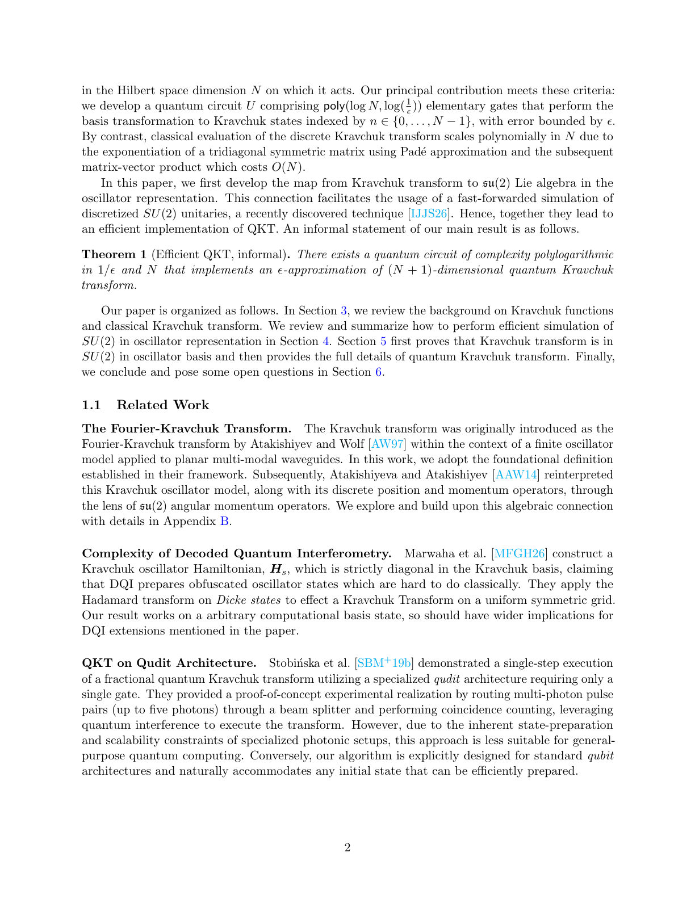
<figcaption class="paper-figure-caption"><b>Fig 1.</b> Low-resolution page preview, page 2</figcaption>
</figure>
<figure class="paper-figure-card">
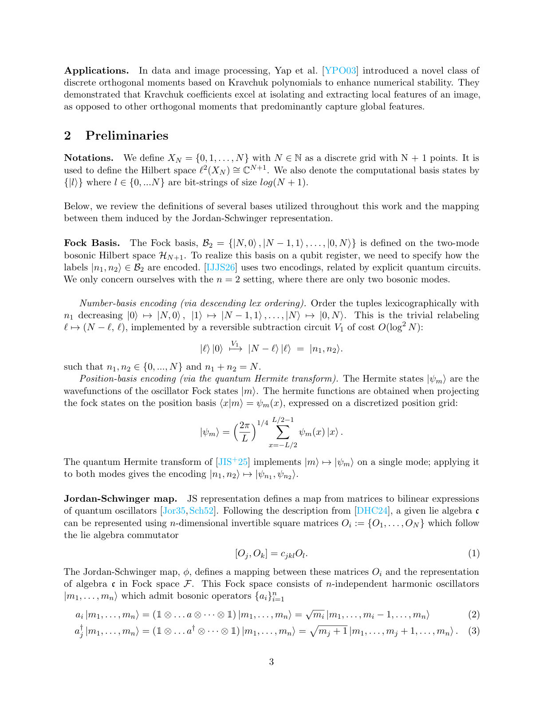
<figcaption class="paper-figure-caption"><b>Fig 2.</b> Low-resolution page preview, page 3</figcaption>
</figure>
<figure class="paper-figure-card">
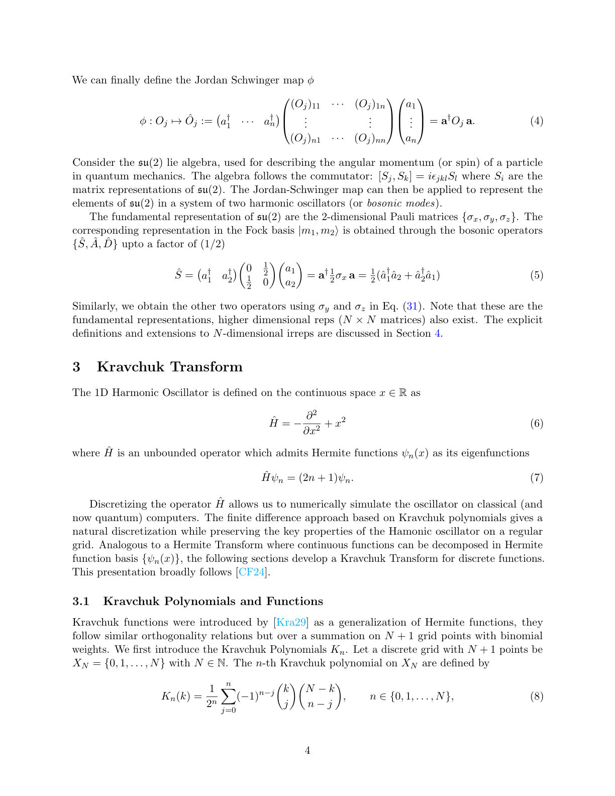
<figcaption class="paper-figure-caption"><b>Fig 3.</b> Low-resolution page preview, page 4</figcaption>
</figure>
<figure class="paper-figure-card">
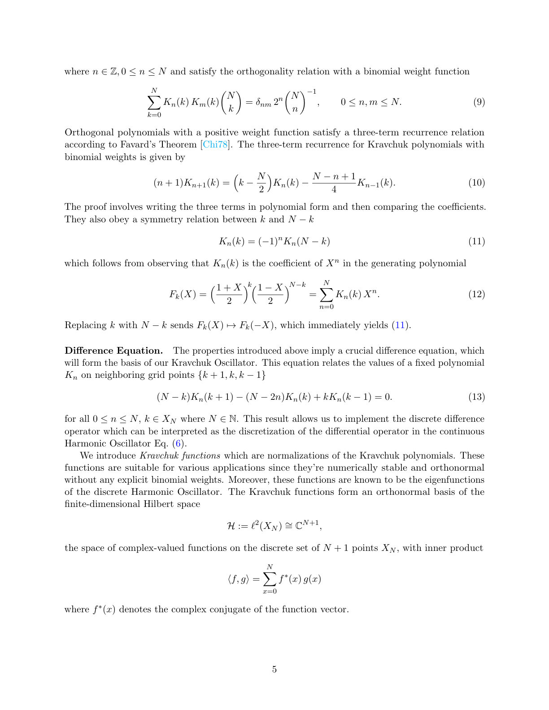
<figcaption class="paper-figure-caption"><b>Fig 4.</b> Low-resolution page preview, page 5</figcaption>
</figure>
<figure class="paper-figure-card">
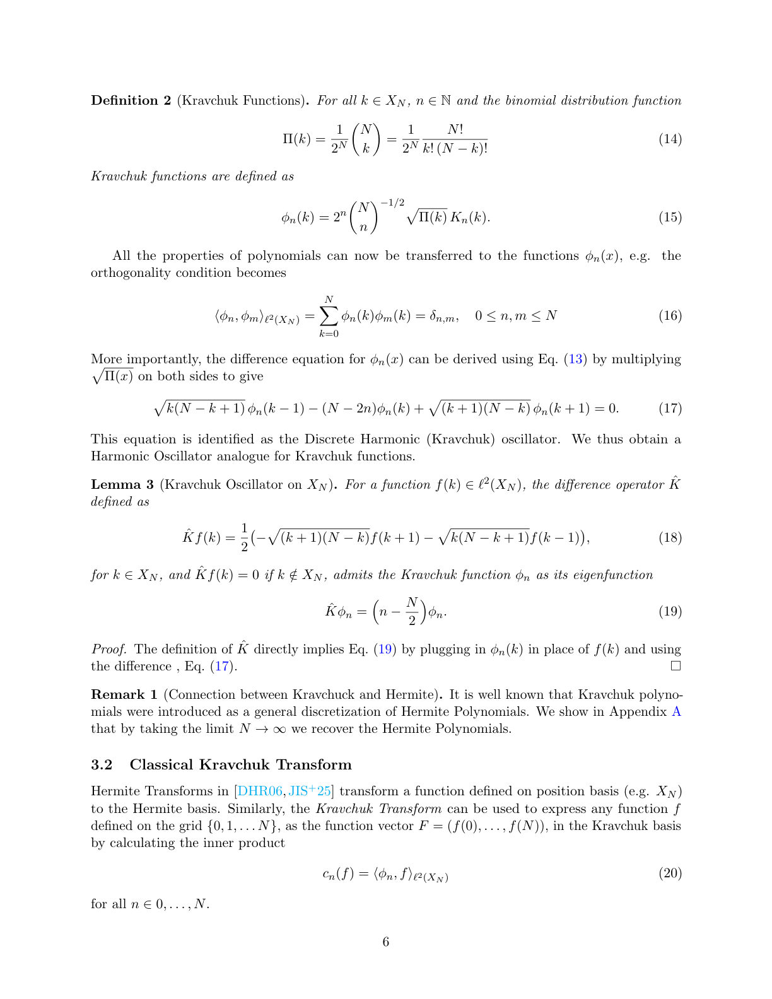
<figcaption class="paper-figure-caption"><b>Fig 5.</b> Low-resolution page preview, page 6</figcaption>
</figure>
</div>
<p><strong>Summary.</strong> The paper presents an efficient quantum algorithm for the Quantum Kravchuk Transform by exploiting its deep mathematical connection to the $\mathfrak{su}(2)$ Lie algebra. By mapping the transform onto this algebraic structure and utilizing fast-forwarding simulation techniques, the authors achieve a polylogarithmic gate complexity. This demonstrates a powerful methodology for implementing transforms associated with discrete orthogonal polynomials on quantum hardware.</p>
<p><strong>Why it may be interesting.</strong> This work provides a concrete example of applying advanced algebraic structures ($\mathfrak{su}(2)$) and state-of-the-art quantum simulation techniques (fast-forwarding) to solve a problem in orthogonal polynomial theory, demonstrating potential quantum advantage over classical methods for specific transforms.</p>
<details>
<summary>Detailed structure</summary>
<p><strong>Main problem.</strong> The primary goal is developing an efficient quantum algorithm for the Quantum Kravchuk Transform (QKT). This aims to achieve a computational complexity that scales logarithmically with system size, surpassing classical polynomial scaling.</p>
<p><strong>Main result.</strong> An efficient quantum circuit implementing the QKT was developed by mapping the transform structure onto the $\mathfrak{su}(2)$ Lie algebra. The resulting algorithm achieves a time complexity of $O((\log N + \log(1/\epsilon))^3 	imes \log(1/\epsilon))$ gates.</p>
<p><strong>Method.</strong> The method combines establishing a structural link between the Kravchuk transform and $\mathfrak{su}(2)$, followed by applying advanced fast-forwarding simulation techniques for $   ext{SU}(2)$ group elements in the oscillator representation.</p>
<p><strong>Model / system.</strong> The system is based on the discrete harmonic oscillator, whose eigenfunctions are the Kravchuk polynomials/functions defined over a finite lattice $X_N = \{0, 1, \dots, N\}$. The dynamics and transform properties are modeled using operators satisfying $\mathfrak{su}(2)$ commutation relations.</p>
<p><strong>Key observables.</strong> The QKT itself (mapping computational basis states to Kravchuk function states), the spectrum of the discrete harmonic oscillator Hamiltonian ($\hat{K}$), and the matrix elements of the transformation operators.</p>
<p><strong>Important parameters / regimes.</strong> Dimension $N$ (or lattice size), error bound $\epsilon$, and the logarithmic scaling factors derived from the fast-forwarding techniques.</p>
<p><strong>Assumptions / limitations.</strong> The approach relies on successfully mapping the Kravchuk transform structure onto an irreducible representation of $\mathfrak{su}(2)$ to enable the use of established efficient simulation algorithms for Lie groups.</p>
<p><strong>Paper structure.</strong> The paper builds by first defining the mathematical properties of the Kravchuk polynomials and their connection to the discrete harmonic oscillator. It then establishes this link to $\mathfrak{su}(2)$ via the Jordan-Schwinger map, allowing the application of fast-forwarding techniques developed for $    ext{SU}(2)$ evolution to construct the final quantum circuit.</p>
</details>
<details>
<summary>Abstract</summary>
<p>We present a quantum algorithm for the Kravchuk transform that scales logarithmically in both the dimension and the inverse of the error parameter. The quantum Kravchuk transform maps computational basis states to states with amplitudes proportional to Kravchuk functions. We achieve this by combining two key techniques: the structural relationship between the Kravchuk transform and the Lie algebras $\mathfrak{su}(2)$, and a recent fast-forwarding simulation method for $\mathfrak{su}(2)$ operators in the oscillator representation. More precisely, we first establish the map from Kravchuk transform in computational basis to $\mathfrak{su}(2)$ in Fock basis. Then built on this connection, we apply the fast-forwarding to achieve an efficient quantum Kravchuk transform.</p>
</details>
<p><sub><a href="#top">↑ back to top</a></sub></p>

<p><a id="paper-2606.07757"></a></p>
<h3 id="rem-universality-and-poisson-dirichlet-gibbs-weights-for-linear-random-energy"><a href="http://arxiv.org/abs/2606.07757v1">REM universality and Poisson-Dirichlet Gibbs weights for linear random energy</a></h3>
<p><strong>Authors:</strong> Francesco Concetti, Simone Franchini<br>
<strong>Type:</strong> theory · <strong>Category:</strong> statistical mechanics · <strong>PDF:</strong> <a href="https://arxiv.org/pdf/2606.07757v1">https://arxiv.org/pdf/2606.07757v1</a><br>
<strong>Analysis basis:</strong> full PDF text, analyzed in chunks</p>
<div class="figure-strip-hint">↔ Scroll figures horizontally</div>
<div class="paper-figures-scroll">
<figure class="paper-figure-card">
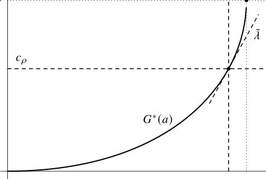
<figcaption class="paper-figure-caption"><b>Fig 1.</b> Figure 1. The curve 𝐺∗denotes the quenched large-deviation rate function of 𝐻𝑛conditional on the environment ℎ. The parameter ˜𝑎is defined by 𝐺∗( ˜𝑎) = 𝑐𝜌, and ˜𝜆is the slope of 𝐺∗at ˜𝑎.</figcaption>
</figure>
</div>
<p><strong>Summary.</strong> This paper proves that the energy levels of a purely linear random Hamiltonian exhibit Random Energy Model (REM) universality after thinning. It rigorously determines that the resulting point process converges to a Poisson Point Process and identifies that the associated Gibbs weights converge to the Poisson-Dirichlet law, revealing a phase transition in the free energy at a critical temperature.</p>
<p><strong>Why it may be interesting.</strong> The rigorous proof of REM universality for this specific linear model provides deep insights into how complex statistical physics models simplify to universal limiting forms, which is relevant for understanding disordered systems in quantum mechanics.</p>
<details>
<summary>Detailed structure</summary>
<p><strong>Main problem.</strong> The study aims to establish Random Energy Model (REM) universality for energy levels derived from a purely linear random Hamiltonian and determine the limiting behavior of associated Gibbs weights.</p>
<p><strong>Main result.</strong> The thinned point process of energy levels converges to a Poisson Point Process, and the joint distribution of ranked Gibbs weights converges to the Poisson-Dirichlet law in the low-temperature regime.</p>
<p><strong>Method.</strong> The analysis uses techniques involving independent thinning processes, computing limit Laplace functionals for point processes, and applying large-deviation principles to analyze weight convergence.</p>
<p><strong>Model / system.</strong> The system is defined by the Hamiltonian H_n(h, \sigma) = \sum_{i=1}^n h_i(\sigma_i - m), where h_i are i.i.d. random variables and \sigma_i are Ising spins. The analysis focuses on energy levels obtained after retaining an exponential number of configurations.</p>
<p><strong>Key observables.</strong> Energy level point process, Gibbs weights, quenched free energy F(β).</p>
<p><strong>Important parameters / regimes.</strong> β (inverse temperature), τλ (critical parameter related to the PPP intensity), and the thinning factor c_ό.</p>
<p><strong>Assumptions / limitations.</strong> The proof relies on regularity hypotheses for h_1, including a linear small-ball condition, and assumes sharp large-deviation estimates from prior work.</p>
<p><strong>Figures summary.</strong> Figure 1 illustrates the quenched large-deviation rate function G*(a) versus a, defining parameters τλ and α.</p>
<p><strong>Paper structure.</strong> The paper first establishes REM universality for the point process convergence to PPP(D_{τλ}), then analyzes the Gibbs weights showing convergence to PD(τλ/β, 0), and finally computes the free energy exhibiting a phase transition at β = τλ.</p>
</details>
<details>
<summary>Abstract</summary>
<p>We study the Hamiltonian $H_n(h,σ)=\sum_{i=1}^n h_i(σ_i-m), $ where $(h_i)$ are i.i.d.\ real random variables and $(σ_i)$ are i.i.d.\ Ising spins. We consider the energy levels obtained after an independent thinning that retains an exponential number of configurations ($e^{O(n)}$). We prove that, after an $(h_i)$-dependent centering, the resulting point process converges in distribution to a Poisson point process with exponential intensity. Thus, the energy levels asymptotically has the one of the Random Energy Model (REM). Our results extend previous ones, where REM universality for this model was established only either for energy fluctuations of order $e^{-O(n)}$ or for $e^{o(\sqrt n)}$ randomly selected configurations. We also identify the limiting Gibbs weights, which converge to a Poisson--Dirichlet law, and the quenched free energy, which exhibits a freezing transition at $β=\tildeλ$. The proofs are presented here in compressed form; full details are given in the companion preprint.</p>
</details>
<p><sub><a href="#top">↑ back to top</a></sub></p>

<p><a id="paper-2606.09602"></a></p>
<h3 id="zermelos-navigation-problem-through-the-lens-of-quantum-annealing-how-the-landau-zener-approximation-leads-to-an-efficient-classical-solution"><a href="http://arxiv.org/abs/2606.09602v1">Zermelo's navigation problem through the lens of quantum annealing: How the Landau-Zener approximation leads to an efficient classical solution</a></h3>
<p><strong>Authors:</strong> Sølve Selstø, Tor Kristian Dahle, Sergiy Denysov, Yves-Laurent Ariel Rezus, Leiv Øyehaug<br>
<strong>Type:</strong> theory · <strong>Category:</strong> quantum information and computing · <strong>PDF:</strong> <a href="https://arxiv.org/pdf/2606.09602v1">https://arxiv.org/pdf/2606.09602v1</a><br>
<strong>Analysis basis:</strong> full PDF text, analyzed in chunks</p>
<div class="figure-strip-hint">↔ Scroll figures horizontally</div>
<div class="paper-figures-scroll">
<figure class="paper-figure-card">
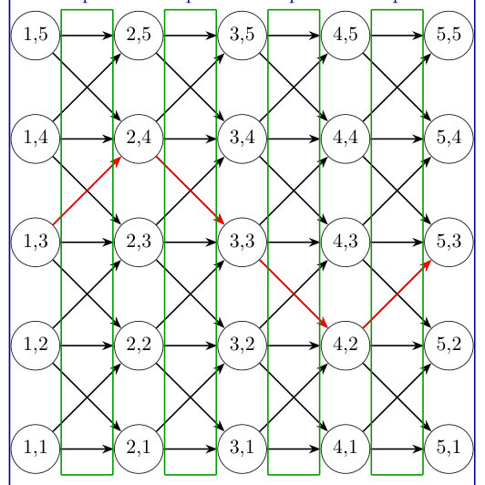
<figcaption class="paper-figure-caption"><b>Fig 1.</b> FIG. 2. In the discretized formulation, the path across the water becomes a sequence of steps</figcaption>
</figure>
<figure class="paper-figure-card">
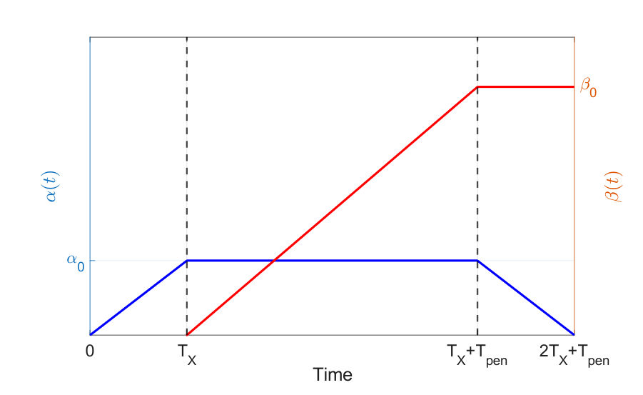
<figcaption class="paper-figure-caption"><b>Fig 2.</b> FIG. 3. The annealing schedules. The anneal is divided into three phases: 1) the exploration term</figcaption>
</figure>
<figure class="paper-figure-card">
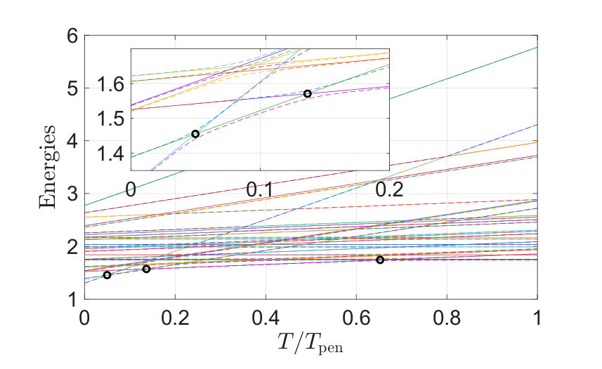
<figcaption class="paper-figure-caption"><b>Fig 3.</b> FIG. 4. The diabatic (full lines) and adiabatic (dashed cures) energies as functions of the penalty</figcaption>
</figure>
<figure class="paper-figure-card">

<figcaption class="paper-figure-caption"><b>Fig 4.</b> FIG. 5. The probability for the various states in the computational basis for various annealing</figcaption>
</figure>
<figure class="paper-figure-card">
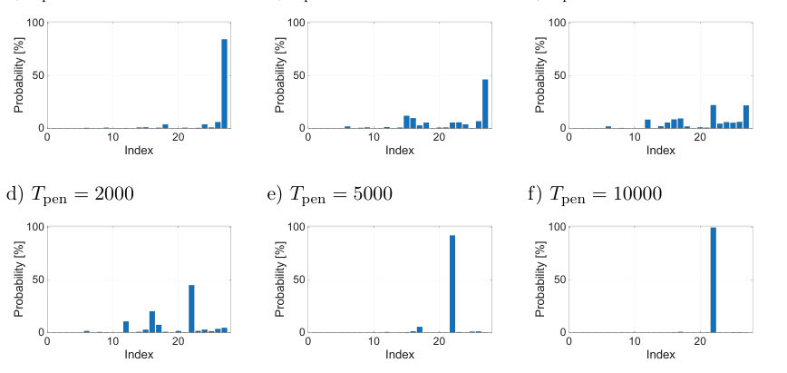
<figcaption class="paper-figure-caption"><b>Fig 5.</b> Figure 6 illustrates the fidelity as a function of Tpen for various choices of n. It displays</figcaption>
</figure>
</div>
<p><strong>Summary.</strong> This work reformulates Zermelo's river-crossing problem as an adiabatic quantum computation task using qutrits. By analyzing the system's evolution through avoided crossings via the Landau-Zener formula, the authors demonstrate that a seemingly complex optimization problem possesses an efficient classical solution scaling only quadratically with size. This highlights how quantum tools can reveal underlying classical structure.</p>
<p><strong>Why it may be interesting.</strong> It provides a pedagogical example of mapping a real-world optimization problem onto a quantum annealer framework, allowing for analytical estimation of performance metrics like fidelity using established quantum dynamics tools.</p>
<details>
<summary>Detailed structure</summary>
<p><strong>Main problem.</strong> The paper addresses Zermelo's navigation problem, a classic optimization challenge, by formulating it as an adiabatic quantum computation task.</p>
<p><strong>Main result.</strong> Despite the initial appearance of exponential complexity, the quantum formulation reveals an underlying classical structure that can be solved efficiently with only quadratic scaling in the problem size.</p>
<p><strong>Method.</strong> The solution utilizes adiabatic quantum computing principles, estimating fidelity via the Landau-Zener formula to analyze the evolution through avoided crossings.</p>
<p><strong>Model / system.</strong> The system models a discretized path across a river using qutrits (ternary variables) encoded into a Hamiltonian. The total Hamiltonian combines a cost term and a penalty term enforcing boundary conditions.</p>
<p><strong>Key observables.</strong> Fidelity ($F$ or $F_{LZ}$), required annealing time ($T_{pen}$), and the optimal path $\vec{s}_{opt}$.</p>
<p><strong>Important parameters / regimes.</strong> The problem size $n$, the annealing schedule parameters ($\alpha(t), eta(t)$), and the critical crossing values.</p>
<p><strong>Assumptions / limitations.</strong> The validity of the Landau-Zener approximation, which assumes negligible interference effects in the large time limit ($T_{pen} 	o \infty$).</p>
<p><strong>Figures summary.</strong> Figures illustrate the optimal path (Fig. 1), discretized steps (Fig. 2), the three-phase annealing schedule (Fig. 3), and comparisons between actual vs. Landau-Zener fidelity versus $T_{pen}$ (Fig. 6).</p>
<p><strong>Paper structure.</strong> The paper introduces Zermelo's problem, maps it to a qutrit Hamiltonian ($H = H_{	ext{cost}} + eta H_{	ext{pen}}$), details the adiabatic evolution using an annealing schedule, analyzes the fidelity via Landau-Zener theory, and concludes by deriving efficient classical algorithms that match the quantum prediction.</p>
</details>
<details>
<summary>Abstract</summary>
<p>The river-crossing problem, also known as Zermelo's navigation problem, is a classic example of an optimization problem with practical relevance and a scalable degree of complexity. It asks for the optimal trajectory of a vessel moving through a water flow field and provides a setting in which physics, variational methods, and optimization are naturally intertwined. We state a version of Zermelo's problem and then solve it as formulate it as an adiabatic quantum-computing problem using quantum trits, or qutrits for short. The construction includes a penalty term that enforces the prescribed boundary conditions and an exploration term that allows the system to move through intermediate configurations toward the optimal feasible path. In the adiabatic description, the evolution proceeds through a sequence of avoided crossings, so that the resulting fidelity can be estimated using the Landau-Zener formula. Remarkably, the regime in which this approximation is valid also provides a deterministic way to identify the correct solution with computational effort that scales only quadratically with the problem size. Thus, a quantum formulation initially motivated by the apparent exponential complexity of the problem reveals an underlying classical structure that can be exploited efficiently. Our approach also provides a pedagogical illustration of how a real-world optimization problem can be cast into a quantum-annealing framework and then analyzed using the Schrödinger equation, avoided crossings, and Landau-Zener theory.</p>
</details>
<p><sub><a href="#top">↑ back to top</a></sub></p>
</details>
<h2 id="secondary-cond-mat-archives">Secondary cond-mat archives</h2>
<p><em>Papers from cond-mat.mtrl-sci, mes-hall, other, soft, supr-con. These archives are de-prioritized — they appear at the end regardless of relevance score.</em></p>
<h3 id="relevant-in-secondary-archives-25">Relevant in secondary archives (25)</h3>

<p><a id="paper-2606.09546"></a></p>
<h3 id="an-adaptive-coherent-interferometric-oscillator-based-on-an-optoelectronic-magnonic-parametric-oscillator"><a href="http://arxiv.org/abs/2606.09546v1">An Adaptive Coherent Interferometric Oscillator Based on an Optoelectronic Magnonic Parametric Oscillator</a></h3>
<p><strong>Authors:</strong> Shihao Zhou, Junming Wu, Jiazhen Li, Qing Gu, Wei Zhang<br>
<strong>Type:</strong> experiment · <strong>Category:</strong> other · <strong>PDF:</strong> <a href="https://arxiv.org/pdf/2606.09546v1">https://arxiv.org/pdf/2606.09546v1</a><br>
<strong>Analysis basis:</strong> full PDF text, analyzed in chunks
<strong>Topic relevance:</strong> 🔥 <code>spintronics-quantum-optics interface</code> <strong>4/5</strong> · <code>analog quantum simulation</code> <strong>3/5</strong> · <code>correlated / nonlocal dissipation</code> <strong>3/5</strong> · <code>driven-dissipative phase transition</code> <strong>3/5</strong> · <code>interference shaping light</code> <strong>3/5</strong> · <code>methods for driven-dissipative</code> <strong>3/5</strong> · <code>exotic spin models in light-matter</code> <strong>2/5</strong> · <code>non-equilibrium dynamics</code> <strong>2/5</strong> · <code>non-equilibrium universality</code> <strong>2/5</strong> · <code>quantum optics experiment</code> <strong>2/5</strong> · <code>Keldysh / 2PI / non-Gaussian methods</code> <strong>1/5</strong> · <code>Kondo &amp; dissipative impurity</code> <strong>1/5</strong> · <code>correlated cavity matter</code> <strong>1/5</strong> · <code>entanglement &amp; information structure</code> <strong>1/5</strong> · <code>quantum measurements</code> <strong>1/5</strong> · <code>scars &amp; prethermalization</code> <strong>1/5</strong></p>
<div class="figure-strip-hint">↔ Scroll figures horizontally</div>
<div class="paper-figures-scroll">
<figure class="paper-figure-card">
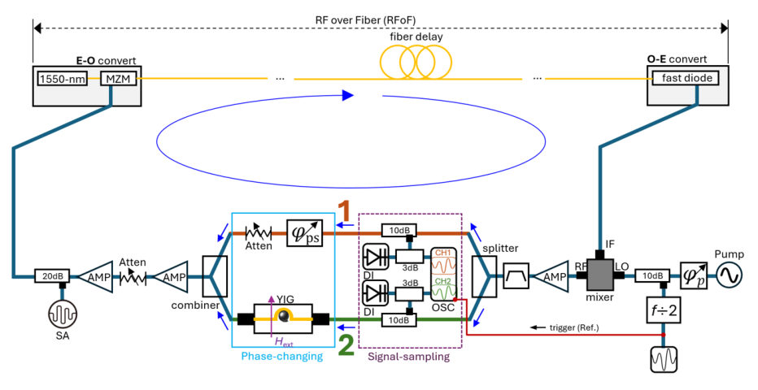
<figcaption class="paper-figure-caption"><b>Fig 1.</b> FIG. 1. Schematic illustration of the setup. The top shows the photonic sector consisting of E-O / O-E converters and a fiber delay. The bottom is the microwave sector consisting of: (from right to left) the mixer RF port, amplifier (Amp), band-pass filter (1730-2270 MHz), splitter, MZI (1 &amp; 2), combiner, Amp, attenuator (Atten), Amp, 20-dB coupler, spectrum analyzer (SA). Inside the MZI: branch 1, the reference branch, consists of a microwave phase shifter (PS) with tunable phase (φps) and an Atten; branch 2, the magnonic branch, consists of a YIG sphere placed atop a microwave stripline, which can induce a resonant, dispersive phase shift upon YIG resonance (φYIG). For both branches, a...</figcaption>
</figure>
<figure class="paper-figure-card">
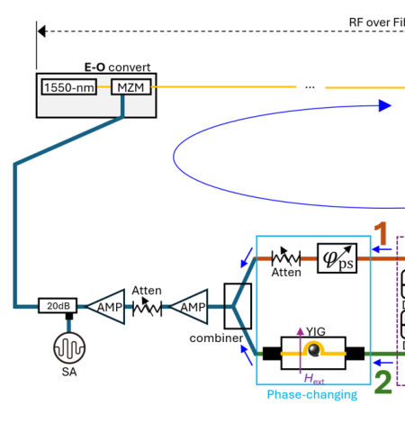
<figcaption class="paper-figure-caption"><b>Fig 2.</b> Figure 1 illustrates the experimental setup. The cen- tral build is an OEO loop that includes an electronic sector (consisting of microwave components for amplify- ing, attenuating, band-passing, and spectral detection) and a photonic sector (consisting of E-O/O-E converters and a fiber delay). For a proof-of-concept, the photonic part can be conveniently implemented by using fiber- optic patch cords and off-the-shelf RF-over-Fiber (RFoF) systems [6]. On the right end, an electrical parametric pumping sector can be incorporated into the loop via the local oscillator (LO) port of a frequency mixer – the nonlinear electrical device – consisting of a signal gen- erator supplying a pump signal,...</figcaption>
</figure>
<figure class="paper-figure-card">
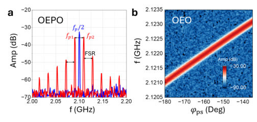
<figcaption class="paper-figure-caption"><b>Fig 3.</b> FIG. 2. Two independent methods to determine the cavity FSR. (a) In the OEPO case, the FSR can be directly read out from the separation between the nondegenerate mode pairs, e.g., fp1 and fp2, yielding 18.2 MHz. The degenerate situation yields a single strong peak at fp/2. The traces are obtained at Atten = 13 dB. Red peaks: φps = −25◦, Blue peak: φps = −100◦. (b) In the OEO case, the FSR is calculated by the frequency pulling, yielding a nominal value of 15.8 MHz and an effective βMZI ≈0.87. The trace is obtained at Atten = 20 dB.</figcaption>
</figure>
<figure class="paper-figure-card">
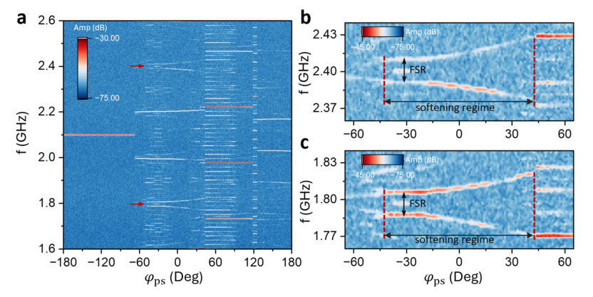
<figcaption class="paper-figure-caption"><b>Fig 4.</b> FIG. 3. Spectrum of MZI-enhanced OEPO. (a) The full spectrum by scanning the φps from φps = −180◦to 180◦, under a pump fp = 4.2 GHz at 8 dBm power. The main loop is at Atten = 10.5 dB. (b,c) Zoom-in regime showing the frequency pulling near (b) 2.4 and (c) 1.8 GHz. The softening regime is identified near φps ∈(−43◦, 43◦), corresponding to an effective locking bandwidth of ∆flock = ∆lock/(2π) ≈1.89 MHz.</figcaption>
</figure>
<figure class="paper-figure-card">
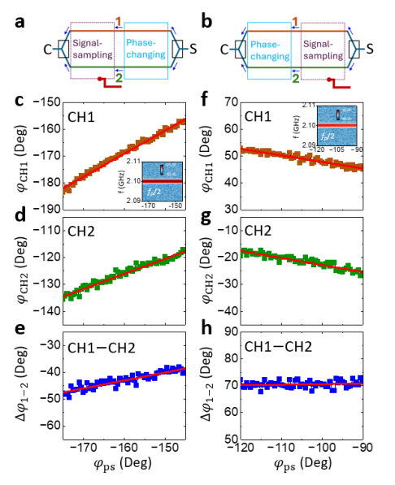
<figcaption class="paper-figure-caption"><b>Fig 5.</b> FIG. 4. (a,b) Two sampling positions in which: (a) signal- sampling after the phase-changing elements (phase-changing →signal-sampling), and (b) signal-sampling before the phase- changing elements (signal-sampling →phase-changing). C: combiner, S: splitter. (c,d,e) phase evolution as a function of the phase-shifter nominal set phase, φps, for the case in (a) of (c) phase shifter branch (CH1), (d) YIG branch (CH2), and (e) the net phase. (f,g,h) phase evolution as a function of the phase-shifter nominal set phase, φps, for the case in (b) of (g) phase shifter branch (CH1), (f) YIG branch (CH2), and (h) the net phase. Inset of (c) and (f): OEPO spectrum showing the stable fp/2 mode throughout...</figcaption>
</figure>
</div>

<p><strong>Summary.</strong> This paper characterizes an advanced optoelectronic magnonic parametric oscillator built around a Mach-Zehnder interferometer. By analyzing the system's response to magnetic field perturbations, the authors demonstrate that the MZI enables complex, adaptive dynamics beyond simple resonance locking. This framework is valuable for exploring nonlinear interferometric physics in hybrid magnonic-photonic systems.</p>
<p><strong>Why it may be interesting.</strong> The work provides an excellent platform for studying open quantum systems dynamics by modeling coherent phase redistribution and adaptive nonlinear interactions between two distinct physical subsystems (magnonics and photonics).</p>
<details>
<summary>Detailed structure</summary>
<p><strong>Main problem.</strong> The study investigates adaptive interferometric oscillator dynamics under distributed phase perturbations using a hybrid magnonic-photonic platform.</p>
<p><strong>Main result.</strong> The MZI architecture introduces an additional adaptive degree of freedom, leading to partially synchronized dynamics where the YIG branch acts locally and the phase shifter controls global geometry.</p>
<p><strong>Method.</strong> Analysis involves measuring frequency pulling, comparing local vs. global sampling configurations, and applying complex-Lorentzian fitting techniques.</p>
<p><strong>Model / system.</strong> The system is an MZI-based optoelectronic magnonic parametric oscillator (OEMPO) combining a YIG-loaded magnonic branch and a tunable phase-shifter branch within an OEO loop structure.</p>
<p><strong>Key observables.</strong> Loop Free Spectral Range (FSR), effective delay time ($    au$), cross-susceptibility coefficient ($\kappa_{YIG   o ps}$), and phase-to-amplitude conversion ratios.</p>
<p><strong>Important parameters / regimes.</strong> The system exhibits distinct behavior in the phase-pinned OEPO regime versus the frequency-adaptive OEO regime.</p>
<p><strong>Assumptions / limitations.</strong> The analysis assumes that the cross-coupling can be separated into amplitude-mediated and phase-mediated terms, with the latter dominating the coupling mechanism.</p>
<p><strong>Figures summary.</strong> Figures illustrate schematics of the setup, measurements comparing FSR determination via mode pair separation (OEPO) versus frequency pulling (OEO), and phase evolution vs. magnetic field for different sampling points.</p>
<p><strong>Paper structure.</strong> The paper systematically analyzes the system by first establishing the MZI structure's role in introducing adaptive freedom, then quantifying the distinct roles of the YIG branch (local dispersion) and the PS branch (global geometry), culminating in a quantitative analysis of their cross-coupling and regime differences.</p>
</details>
<details>
<summary>Abstract</summary>
<p>We study a Mach-Zehnder interferometer (MZI)-based optoelectronic magnonic parametric oscillator (OEMPO) incorporating a YIG-loaded magnonic branch and a tunable phase-shifter branch, enabling systematic investigation of adaptive interferometric oscillator dynamics under distributed phase perturbations. Through analysis of nondegenerate OEPO mode pairs and frequency-pulling behavior, the loop free spectral range (FSR) and effective delay time were quantitatively extracted. Despite the nominally frequency-pinned parametric operation, weak frequency pulling and OEPO mode softening were observed, revealing an additional adaptive interferometric degree of freedom introduced by the MZI architecture. By comparing local and global sampling configurations, we demonstrate that the YIG branch behaves predominantly as a local dispersive resonant subsystem governed by the complex magnonic susceptibility, whereas the phase-shifter branch primarily controls the global interferometric redistribution geometry. Nevertheless, coherent recombination and adaptive regeneration within the loop produce finite cross-coupling between the two branches, resulting in partially synchronized interferometric dynamics and branch-dependent adaptive redistribution. Quantitative complex-Lorentzian analysis further reveals substantial phase-to-amplitude conversion and distinct differences between the OEO and OEPO regimes: the phase-pinned OEPO favors strongly dispersive local YIG response, while the frequency-adaptive OEO exhibits more mixed absorptive--dispersive behavior due to spectral relaxation through frequency pulling. Broadly, the present platform establishes a versatile framework for exploring adaptive nonlinear interferometric physics, coherent phase redistribution, and branch-dependent synchronization phenomena in hybrid magnonic-photonic oscillator systems.</p>
</details>
<p><sub><a href="#top">↑ back to top</a></sub></p>

<p><a id="paper-2606.07862"></a></p>
<h3 id="crystallizing-substrates-drag-supported-nanoparticles"><a href="http://arxiv.org/abs/2606.07862v1">Crystallizing Substrates Drag Supported Nanoparticles</a></h3>
<p><strong>Authors:</strong> Cheng-Yu Chen, Duncan Burns, Peter W. Voorhees, Eric A. Stach<br>
<strong>Type:</strong> both · <strong>Category:</strong> statistical mechanics · <strong>PDF:</strong> <a href="https://arxiv.org/pdf/2606.07862v1">https://arxiv.org/pdf/2606.07862v1</a><br>
<strong>Analysis basis:</strong> full PDF text, analyzed in chunks
<strong>Topic relevance:</strong> 🔥 <code>non-equilibrium dynamics</code> <strong>4/5</strong> · <code>driven-dissipative phase transition</code> <strong>3/5</strong> · <code>methods for driven-dissipative</code> <strong>3/5</strong> · <code>non-equilibrium universality</code> <strong>3/5</strong> · <code>Frenkel-Kontorova</code> <strong>2/5</strong> · <code>Keldysh / 2PI / non-Gaussian methods</code> <strong>2/5</strong> · <code>analog quantum simulation</code> <strong>2/5</strong> · <code>Kondo &amp; dissipative impurity</code> <strong>1/5</strong> · <code>correlated / nonlocal dissipation</code> <strong>1/5</strong> · <code>entanglement &amp; information structure</code> <strong>1/5</strong> · <code>scars &amp; prethermalization</code> <strong>1/5</strong></p>
<div class="figure-strip-hint">↔ Scroll figures horizontally</div>
<div class="paper-figures-scroll">
<figure class="paper-figure-card">
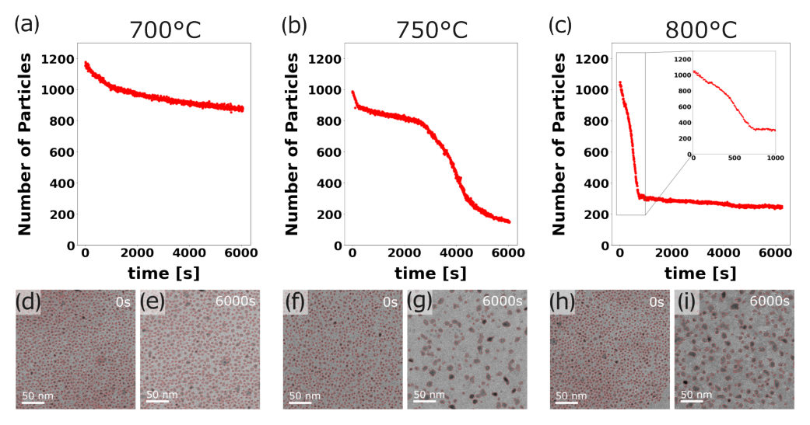
<figcaption class="paper-figure-caption"><b>Fig 1.</b> FIG. 1. Distinct temperature-dependent regimes in the evolution of Pt particles on AlOx supports during in situ TEM heating. (a–c) Particle number as a function of time during heating at 700, 750, and 800 ◦C, respectively. (d–i) Representative TEM images recorded at 0 and 6000 s at each temperature: (d,e) 700 ◦C, (f,g) 750 ◦C, and (h,i) 800 ◦C. Red outlines mark particle boundaries.</figcaption>
</figure>
<figure class="paper-figure-card">
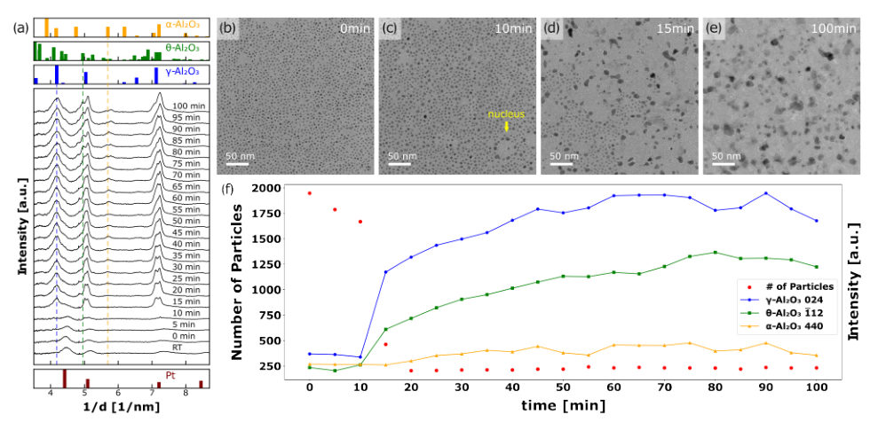
<figcaption class="paper-figure-caption"><b>Fig 2.</b> FIG. 2. Temporal correlation between support crystallization and particle migration during in situ TEM heating at 800◦C. (a) Time-resolved radially integrated intensity profiles of SAED patterns collected during heating of Pt particles on a 20 nm AlOx thin film at 800◦C. Reference reflection positions for α-, θ-, and γ-Al2O3 and Pt are indicated for comparison. Colored dashed lines indicate the representative diffraction reflections assigned to γ-Al2O3 024, θ-Al2O3 ¯112, and α-Al2O3 440, whose integrated intensities are plotted in (f). (b–e) Representative TEM images acquired after 0, 10, 15, and 100 min of heating, respectively. (f) Time-dependent changes in particle number and selected...</figcaption>
</figure>
<figure class="paper-figure-card">
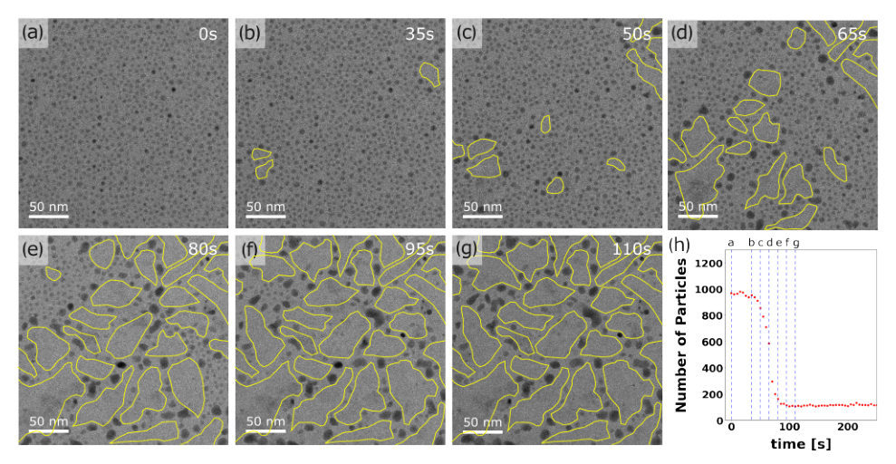
<figcaption class="paper-figure-caption"><b>Fig 3.</b> FIG. 3. Dynamic evidence linking Pt particle migration to the lateral propagation of support crystallization during in situ TEM heating at 800◦C. (a–g) Time series from a separate high-temporal-resolution in situ TEM heating experiment on a 20 nm AlOx thin film. Yellow contours outline particle-free regions. (h) Particle number as a function of time. Blue dashed lines indicate the time points corresponding to panels (a–g).</figcaption>
</figure>
<figure class="paper-figure-card">
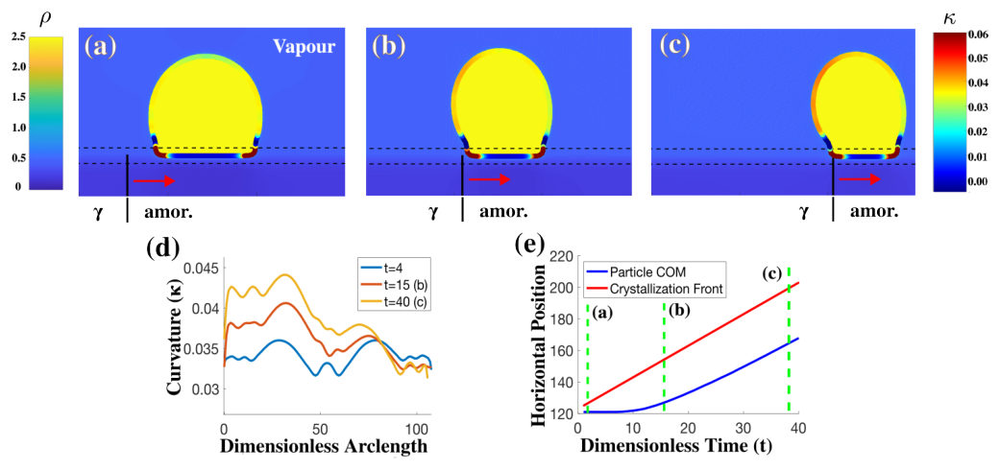
<figcaption class="paper-figure-caption"><b>Fig 4.</b> FIG. 4. Simulation of crystallization front induced particle motion. (a-c) Pt density map snapshots. Particle curvature (κ) is plotted along the platinum solid-vapor interface (ϕ = 0.5). (d) Particle curvature as a function of arclength from left to right above the contact point core region. (e) Center of mass position of particle (blue) and crystallization front position (red) as a function of simulation time, t = 105dt.</figcaption>
</figure>
</div>

<p><strong>Summary.</strong> This work demonstrates that crystallization fronts act as powerful, deterministic drivers for nanoparticle movement. By combining in situ TEM with phase-field simulations, the authors prove that the resulting asymmetric surface energy gradient pulls nanoparticles along with the advancing crystal interface. This establishes a general principle for understanding transport driven by structural phase boundaries.</p>
<p><strong>Why it may be interesting.</strong> While focused on condensed matter physics, the concept of a deterministic transport mechanism driven by non-equilibrium thermodynamic gradients (like those found at moving interfaces) is highly relevant to open quantum systems where environmental coupling drives system evolution.</p>
<details>
<summary>Detailed structure</summary>
<p><strong>Main problem.</strong> To determine the mechanism by which a propagating surface-energy boundary, such as during crystallization, can deterministically drive the transport of supported nanoparticles.</p>
<p><strong>Main result.</strong> Propagating crystallization fronts actively drag supported Pt nanoparticles over long distances due to asymmetric particle-substrate interfacial energy environments. This process is governed by curvature gradients that redistribute mass and displace the particles.</p>
<p><strong>Method.</strong> The study combines in situ TEM tracking of nanoparticle motion with time-resolved diffraction/4D-STEM analysis of support crystallization, supplemented by phase-field simulations.</p>
<p><strong>Model / system.</strong> The system involves Pt nanoparticles supported on amorphous $   ext{AlO}_x$ thin films undergoing an amorphous-to-crystalline transformation into $ ext{Al}_2   ext{O}_3$. The theoretical framework models the driving force using surface energy gradients and curvature effects.</p>
<p><strong>Key observables.</strong> Particle number evolution over time, SAED patterns confirming crystal phases ($\gamma$-, $ heta$-, $\alpha$-$  ext{Al}_2   ext{O}_3$), particle-free regions visualized by 4D-STEM virtual crystallinity maps.</p>
<p><strong>Important parameters / regimes.</strong> Temperature ($700^\circ	ext{C}$ to $800^\circ	ext{C}$), crystallization front velocity, and the magnitude of surface energy contrast ($\Delta \gamma$).</p>
<p><strong>Assumptions / limitations.</strong> The model assumes that particle motion is driven solely by the interfacial energy contrast created by the moving front; it also relies on assumptions about equilibrium contact angles in simulations.</p>
<p><strong>Figures summary.</strong> Figures show temperature-dependent particle evolution (Fig. 1), correlating rapid migration with the onset of crystalline alumina reflections via SAED, and simulation snapshots illustrating mass flow driven by curvature gradients near the advancing front (Fig. 4).</p>
<p><strong>Paper structure.</strong> The paper progresses from initial observations of particle immobilization upon crystallization to detailed in situ tracking experiments confirming temporal correlation between front advance and migration, culminating in phase-field simulations that mathematically prove the mechanism via surface energy gradient analysis.</p>
</details>
<details>
<summary>Abstract</summary>
<p>When a solid support undergoes crystallization, the advancing amorphous-to-crystalline transformation front separates regions of distinct surface energy, creating a moving interfacial energy boundary. A supported nanoparticle straddling such a boundary experiences an asymmetric particle-substrate interfacial energy environment that constitutes a lateral thermodynamic driving force for migration. Here, using in situ transmission electron microscopy to track Pt nanoparticle motion statistically, paired with time-resolved diffraction and 4D-STEM analysis to characterize support crystallization, we demonstrate that propagating crystallization fronts in amorphous AlO$_x$ thin films actively drag supported Pt nanoparticles over long distances. Temporal correlation between the onsets of support crystallization and rapid particle migration, together with 4D-STEM virtual crystallinity maps, establishes that the front drives particle motion. Phase-field simulations confirm that particle-substrate interfacial energy contrast alone sustains particle drag, and identify curvature gradients along the particle surface as the mechanism by which the advancing front redistributes mass and displaces the particle. These results establish a general mechanism by which any propagating surface-energy boundary on a substrate can act as a deterministic driver of supported nanoparticle transport.</p>
</details>
<p><sub><a href="#top">↑ back to top</a></sub></p>

<p><a id="paper-2606.09244"></a></p>
<h3 id="correlation-enhanced-resistance-hysteresis-near-half-filling-in-mos2wse2-heterobilayer"><a href="http://arxiv.org/abs/2606.09244v1">Correlation enhanced resistance hysteresis near half filling in MoS2/WSe2 heterobilayer</a></h3>
<p><strong>Authors:</strong> Yong Chen, Weikang Zhang, Meizhen Huang, Shengling Xiang, Zishu Zhou, Yaqi Ma, Chenxuan Lou, Haoxi Ji, Aoqian Zhang, Yifei Jin, Liheng An, Zefei Wu, Chun Cheng, Ning Wang<br>
<strong>Type:</strong> experiment · <strong>Category:</strong> strongly correlated electrons · <strong>PDF:</strong> <a href="https://arxiv.org/pdf/2606.09244v1">https://arxiv.org/pdf/2606.09244v1</a><br>
<strong>Analysis basis:</strong> full PDF text, analyzed in chunks
<strong>Topic relevance:</strong> 🔥 <code>analog quantum simulation</code> <strong>4/5</strong> · <code>driven-dissipative phase transition</code> <strong>3/5</strong> · <code>Kondo &amp; dissipative impurity</code> <strong>2/5</strong> · <code>non-equilibrium dynamics</code> <strong>2/5</strong> · <code>non-equilibrium universality</code> <strong>2/5</strong> · <code>Frenkel-Kontorova</code> <strong>1/5</strong> · <code>Keldysh / 2PI / non-Gaussian methods</code> <strong>1/5</strong> · <code>correlated / nonlocal dissipation</code> <strong>1/5</strong> · <code>entanglement &amp; information structure</code> <strong>1/5</strong> · <code>methods for driven-dissipative</code> <strong>1/5</strong></p>
<div class="figure-strip-hint">↔ Scroll figures horizontally</div>
<div class="paper-figures-scroll">
<figure class="paper-figure-card">
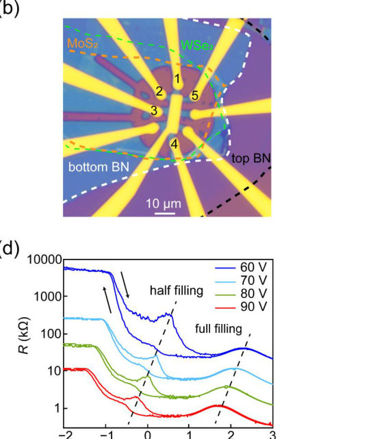
<figcaption class="paper-figure-caption"><b>Fig 1.</b> Fig. 1. (a) Schematic view of the device structure. (b) Optical image of the device. The dashed</figcaption>
</figure>
<figure class="paper-figure-card">
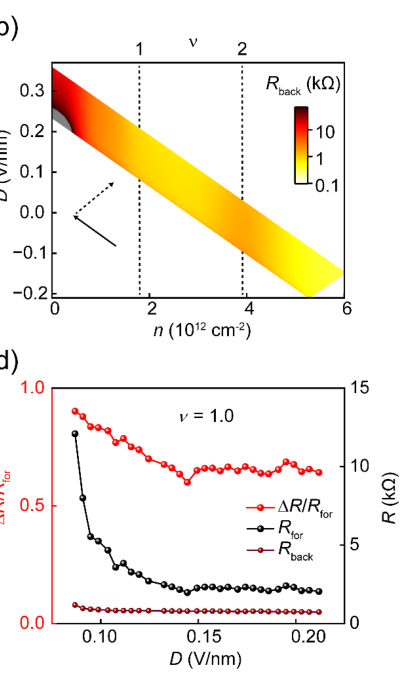
<figcaption class="paper-figure-caption"><b>Fig 2.</b> Fig. 2. (a), (b) Four-terminal resistance as functions of carrier densities and displacement fields</figcaption>
</figure>
<figure class="paper-figure-card">
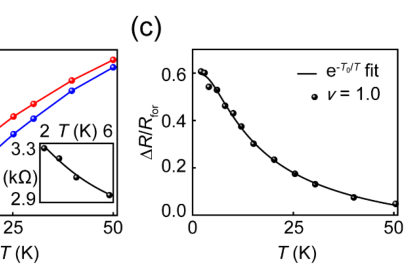
<figcaption class="paper-figure-caption"><b>Fig 3.</b> Fig. 3. (a) Temperature dependent hysteresis at 𝑉bg = 75 𝑉 . The black arrows indicate the</figcaption>
</figure>
<figure class="paper-figure-card">
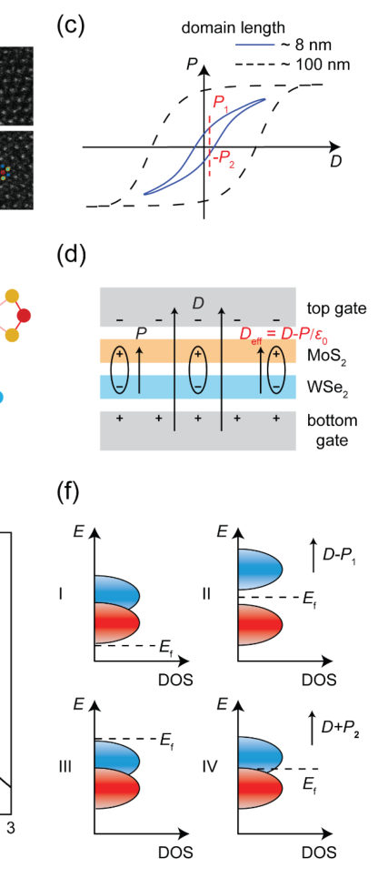
<figcaption class="paper-figure-caption"><b>Fig 4.</b> Fig. 4. (a) TEM image showing high-symmetry stacking regions: AA (atom-on-atom), ABSe (S-</figcaption>
</figure>
</div>

<p><strong>Summary.</strong> The authors report observing robust, history-dependent resistance hysteresis in a $    ext{MoS}_2/ ext{WSe}_2$ moiré superlattice near half filling. They argue that this effect is enhanced by the coupling between ferroelectric polarization switching and the correlated insulating state of the material. The findings establish a new route for controlling quantum phases using electric fields in 2D heterostructures.</p>
<p><strong>Why it may be interesting.</strong> This work bridges concepts from strongly correlated electron physics (Hubbard models) with emergent phenomena in 2D van der Waals heterostructures (ferroelectricity), providing a platform for studying field-tunable quantum phases.</p>
<details>
<summary>Detailed structure</summary>
<p><strong>Main problem.</strong> The study investigates the origin of a prominent, reproducible resistance hysteresis observed near half-filling in a $    ext{MoS}_2/ ext{WSe}_2$ moiré superlattice heterobilayer.</p>
<p><strong>Main result.</strong> The hysteresis is established to be correlation-enhanced, arising from an intrinsic coupling between the correlated insulating state and the ferroelectric switching mechanism. This effect is strongly dependent on filling factor ($
u=1$) and diminishes with increasing external electric field ($D$).</p>
<p><strong>Method.</strong> Electrical transport measurements were performed using a four-probe setup on Hall-bar geometry, sweeping gate voltages to control carrier density and applying an out-of-plane displacement field.</p>
<p><strong>Model / system.</strong> The physical system is a $  ext{MoS}_2/ ext{WSe}_2$ moiré superlattice heterobilayer exhibiting ferroelectricity due to interfacial dipoles. The physics involves correlated insulating states, modeled conceptually by concepts related to the Hubbard model, whose gap size is modulated by external fields and polarization switching.</p>
<p><strong>Key observables.</strong> Resistance hysteresis ($\Delta R/R_{	ext{for}}$), temperature dependence of hysteresis (decaying exponentially), field-effect mobility ($\mu_{FE}$), and the insulating energy gap ($\Delta$).</p>
<p><strong>Important parameters / regimes.</strong> Half-filling ($
u=1$), critical temperatures ($T_c \approx 4.4  ext{ K}$), high mobility ($\sim 17,650  ext{ cm}^2  ext{V}^{-1} ext{s}^{-1}$), and the external displacement field $D$.</p>
<p><strong>Assumptions / limitations.</strong> The hysteresis is attributed to a coupling between ferroelectric polarization switching (modulating the effective field $D_{	ext{eff}}$) and the correlated electronic state undergoing metal-to-insulator transitions.</p>
<p><strong>Figures summary.</strong> Figures show high mobility measurements, clear resistance hysteresis loops peaking at half-filling, temperature dependence showing insulating behavior below 8 K, and quantitative analysis mapping the strength of hysteresis vs. displacement field.</p>
<p><strong>Paper structure.</strong> The paper systematically presents transport measurements demonstrating the hysteresis, analyzes its dependence on filling factor ($
u=1$ peak), quantifies the thermal activation gap in the correlated state, and finally links this behavior to the interplay between ferroelectric switching and electronic correlation effects.</p>
</details>
<details>
<summary>Abstract</summary>
<p>Ferroelectricity, typically arising from ionic displacements in noncentrosymmetric lattices, enabling applications in memory devices and sensors. Recent advances in two-dimensional materials and van der Waals heterostructures have revealed novel ferroelectric phenomena, including sliding ferroelectricity and correlation-driven ferroelectricity in moire superlattices. In this work, we fabricate and study a MoS2/WSe2 moire superlattice device exhibiting a high field-effect mobility of 17,650 $cm^2V^{-1}s^{-1}$. Electrical transport measurements reveal correlated insulating states accompanied by a prominent and reproducible resistance hysteresis near half filling. Temperature and displacement field dependence further confirms the correlation-enhanced nature of the hysteresis. Our analysis suggests that displacement field-induced metal-to-insulator transition at correlated insulating state coupled with interfacial dipoles enables the observed resistance hysteresis. These results establish correlation enhanced resistance hysteresis near half filling in a MoS2/WSe2 heterobilayer, offering opportunities for exploring emergent quantum phases and device functionalities.</p>
</details>
<p><sub><a href="#top">↑ back to top</a></sub></p>

<p><a id="paper-2606.09097"></a></p>
<h3 id="helicity-resolved-spatiotemporal-mapping-of-chiral-plexcitons-in-helicoids"><a href="http://arxiv.org/abs/2606.09097v1">Helicity-Resolved Spatiotemporal Mapping of Chiral Plexcitons in Helicoids</a></h3>
<p><strong>Authors:</strong> Jeong Hyun Han, Sankaran Ramesh, Jaeyeon Jo, Pavel Chabera, Ryeong Myeong Kim, Sung Hoon Cho, In Han Ha, Amitav Sahu, Yoonsang Tak, Jiawei Lv, Miyoung Kim, Ki Tae Nam, Tönu Pullerits<br>
<strong>Type:</strong> both · <strong>Category:</strong> other · <strong>PDF:</strong> <a href="https://arxiv.org/pdf/2606.09097v1">https://arxiv.org/pdf/2606.09097v1</a><br>
<strong>Analysis basis:</strong> full PDF text, analyzed in chunks
<strong>Topic relevance:</strong> <code>driven-dissipative phase transition</code> <strong>3/5</strong> · <code>interference shaping light</code> <strong>3/5</strong> · <code>methods for driven-dissipative</code> <strong>3/5</strong> · <code>non-equilibrium dynamics</code> <strong>2/5</strong> · <code>non-equilibrium universality</code> <strong>2/5</strong> · <code>quantum optics experiment</code> <strong>2/5</strong> · <code>Keldysh / 2PI / non-Gaussian methods</code> <strong>1/5</strong> · <code>Kondo &amp; dissipative impurity</code> <strong>1/5</strong> · <code>analog quantum simulation</code> <strong>1/5</strong> · <code>correlated / nonlocal dissipation</code> <strong>1/5</strong> · <code>correlated cavity matter</code> <strong>1/5</strong></p>
<div class="figure-strip-hint">↔ Scroll figures horizontally</div>
<div class="paper-figures-scroll">
<figure class="paper-figure-card">
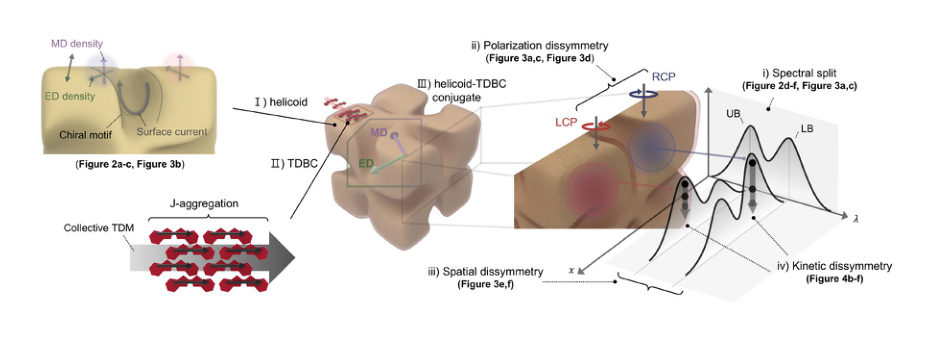
<figcaption class="paper-figure-caption"><b>Fig 1.</b> Figure 1. Rational design of helicoid-TDBC plexcitonic system. Schematic illustration detailing the central</figcaption>
</figure>
<figure class="paper-figure-card">
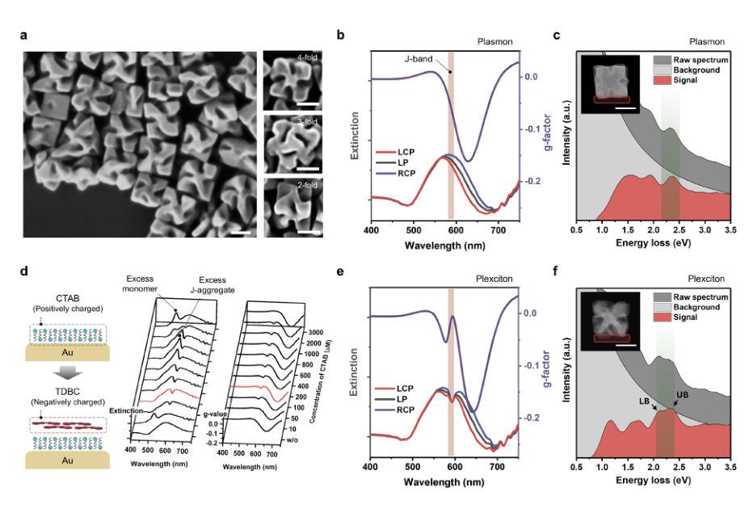
<figcaption class="paper-figure-caption"><b>Fig 2.</b> Figure 2. Realization of helicoid-TDBC plexcitonic system. a, SEM images of helicoids, revealing distinct</figcaption>
</figure>
<figure class="paper-figure-card">
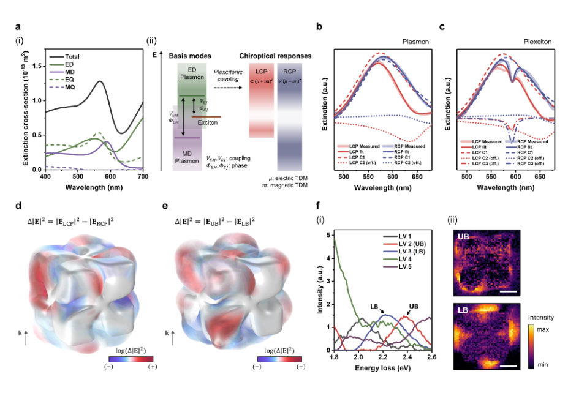
<figcaption class="paper-figure-caption"><b>Fig 3.</b> Figure 3. Macro-to-microscopic characterization of helicoid-TDBC plexcitonic coupling. a, Conceptual</figcaption>
</figure>
<figure class="paper-figure-card">
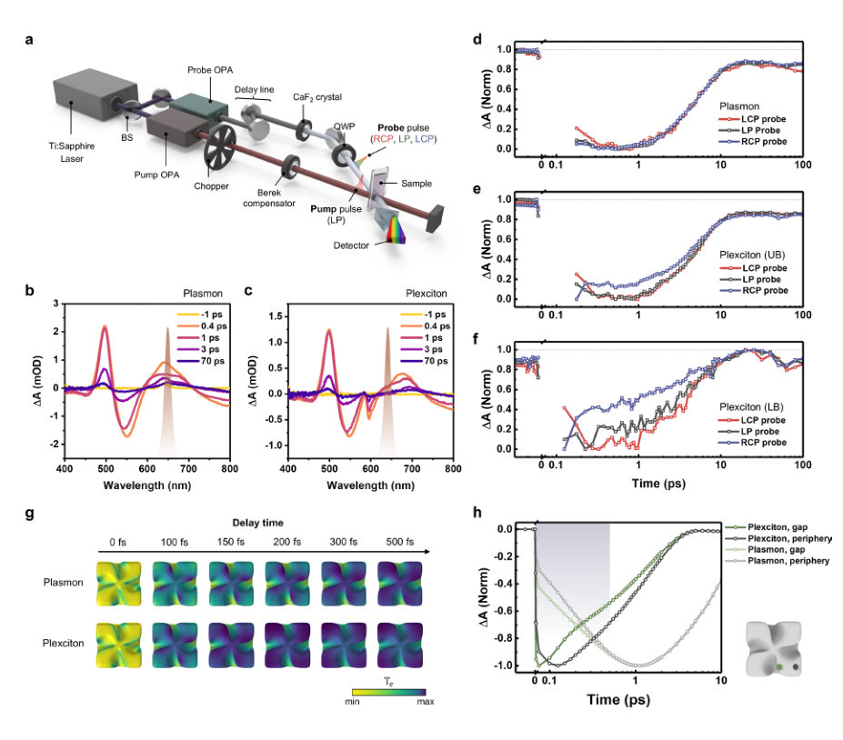
<figcaption class="paper-figure-caption"><b>Fig 4.</b> Figure 4. Resolving and controlling ultrafast dynamics of helicoid-TDBC plexcitonic system. a, Schematic</figcaption>
</figure>
<figure class="paper-figure-card">
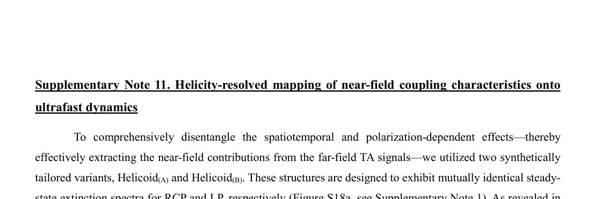
<figcaption class="paper-figure-caption"><b>Fig 5.</b> Figure 3d and schematically illustrated in Figure S18b, although probing these variants with RCP and LP yields</figcaption>
</figure>
</div>

<p><strong>Summary.</strong> The research investigates chiral plexcitons formed by coupling J-aggregates to gold helicoids. By employing a theoretical Non-Hermitian Hamiltonian and polarization-resolved ultrafast spectroscopy, the authors demonstrate that light's handedness selectively addresses distinct nanoscale energy states. This confirms chirality as a practical control mechanism for steering energy flow and accelerating relaxation dynamics in plasmonic nanostructures.</p>
<p><strong>Why it may be interesting.</strong> This work provides a powerful demonstration of how light's angular momentum (helicity) can be used as an active knob to spatially and temporally resolve different coupled quantum states in nanoscale optical systems, which is highly relevant for advanced quantum photonics.</p>
<details>
<summary>Detailed structure</summary>
<p><strong>Main problem.</strong> The core problem is understanding how structural chirality and plasmon-exciton coupling dictate chiroptical spectra and ultrafast energy flow in plexcitonic systems.</p>
<p><strong>Main result.</strong> Polarization (helicity) acts as a selective control parameter, allowing researchers to probe distinct nanoscale hybrid states—specifically accelerating relaxation pathways localized within the chiral gaps under circularly polarized light.</p>
<p><strong>Method.</strong> The study combines theoretical modeling using Non-Hermitian Hamiltonians with advanced experimental techniques like polarization-resolved Transient Absorption (TA) spectroscopy and Electron Energy Loss Spectroscopy (EELS).</p>
<p><strong>Model / system.</strong> The system consists of molecular J-aggregates coupled to intrinsically chiral gold helicoid nanoparticles, forming a plexcitonic structure. The physics is modeled using an extended Non-Hermitian Hamiltonian that incorporates plasmonic Electric Dipole (ED) and Magnetic Dipole (MD) modes alongside the excitonic transition.</p>
<p><strong>Key observables.</strong> Chiroptical response (CD), spectral splitting into Upper/Lower Branches (UB/LB), polarization dependence of near-field intensity, and ultrafast decay kinetics ($  au$).</p>
<p><strong>Important parameters / regimes.</strong> Intermediate coupling regime; helicity of light (RCP vs LCP); gap localization; sub-picosecond time scales.</p>
<p><strong>Assumptions / limitations.</strong> The analysis relies on the NHH framework to dissect spectra and assumes that polarization selectivity in dynamics can reveal underlying near-field spatial asymmetries, even if steady-state spectra are identical.</p>
<p><strong>Figures summary.</strong> Figures illustrate spectral splitting (UB/LB), field intensity mapping showing gap localization under RCP, and time-resolved TA maps demonstrating accelerated decay kinetics specifically when probing the chiral gap region with circularly polarized light.</p>
<p><strong>Paper structure.</strong> The paper progresses from establishing the physical system and theoretical framework (NHH) to characterizing steady-state chiroptical signatures via EELS/spectroscopy. It then moves to ultrafast dynamics, using polarization-resolved TA spectroscopy to demonstrate that helicity selectively probes distinct energy relaxation pathways within the chiral gap.</p>
</details>
<details>
<summary>Abstract</summary>
<p>Plasmon-exciton hybrids, or plexcitons, offer deeply subwavelength light-matter interactions with versatile pathways for energy redistribution. Incorporating chirality into such systems is particularly compelling, enabling spin-sensitive optical functionality that can operate on ultrafast timescales and within ultracompact volumes. Despite recent progress in chiral plexcitonic systems, how structural chirality and plasmon-exciton coupling determine chiroptical spectra and ultrafast energy flow remains elusive. Here we realize chiral plexcitons by functionalizing intrinsically chiral gold helicoid nanoparticles with molecular J-aggregates. Within a non-Hermitian framework, we trace the microscopic origin of the helicoid chiroptical response and its coupling to the excitonic transition, revealing how the helicity of light selectively addresses distinct hybrid responses. At the spatiotemporal extreme, we find that the gap-localized response not only enhances polarization-sensitive contrast but also strengthens the local hybrid interaction, leading to accelerated ultrafast relaxation. Together, these space-, time-, and polarization-resolved measurements provide a physically grounded and experimentally benchmarked picture of chiral plexcitonic coupling, identifying chirality as a practical control parameter for selectively steering nanoscale energy pathways and dynamics.</p>
</details>
<p><sub><a href="#top">↑ back to top</a></sub></p>

<p><a id="paper-2606.08333"></a></p>
<h3 id="nearly-ballistic-transport-and-high-magnetic-field-sensitivity-in-a-math1427math-topological-josephson-weak-link"><a href="http://arxiv.org/abs/2606.08333v1">Nearly ballistic transport and high magnetic-field sensitivity in a $\text{Bi}_4\text{Br}_4$ topological Josephson weak link</a></h3>
<p><strong>Authors:</strong> Enamul Haque, Javier Cerrillo<br>
<strong>Type:</strong> theory · <strong>Category:</strong> other · <strong>PDF:</strong> <a href="https://arxiv.org/pdf/2606.08333v1">https://arxiv.org/pdf/2606.08333v1</a><br>
<strong>Analysis basis:</strong> full PDF text, analyzed in chunks
<strong>Topic relevance:</strong> <code>Keldysh / 2PI / non-Gaussian methods</code> <strong>3/5</strong> · <code>analog quantum simulation</code> <strong>3/5</strong> · <code>spintronics-quantum-optics interface</code> <strong>3/5</strong> · <code>Kondo &amp; dissipative impurity</code> <strong>2/5</strong> · <code>methods for driven-dissipative</code> <strong>2/5</strong> · <code>non-equilibrium dynamics</code> <strong>2/5</strong> · <code>correlated / nonlocal dissipation</code> <strong>1/5</strong> · <code>driven-dissipative phase transition</code> <strong>1/5</strong> · <code>entanglement &amp; information structure</code> <strong>1/5</strong> · <code>exotic spin models in light-matter</code> <strong>1/5</strong> · <code>non-equilibrium universality</code> <strong>1/5</strong></p>
<div class="figure-strip-hint">↔ Scroll figures horizontally</div>
<div class="paper-figures-scroll">
<figure class="paper-figure-card">
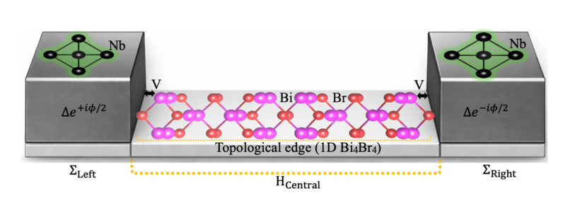
<figcaption class="paper-figure-caption"><b>Fig 1.</b> Figure 1. Schematic illustration of the Nb-1D Bi4Br4–Nb weak-link device and the approach used for modeling it.</figcaption>
</figure>
<figure class="paper-figure-card">
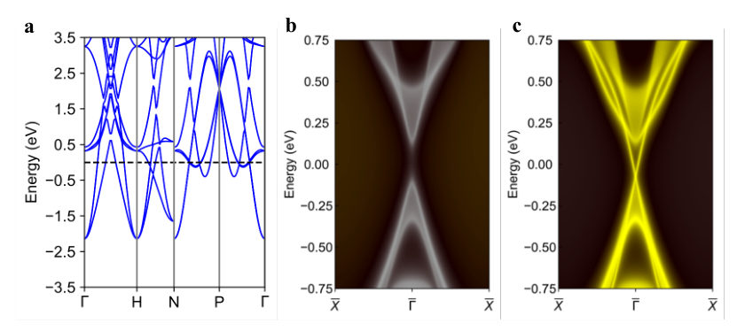
<figcaption class="paper-figure-caption"><b>Fig 2.</b> Figure 2. Bulk electronic band structure of the constituent materials Nb and the one-dimensional electronic dispersion of Bi4Br4.</figcaption>
</figure>
<figure class="paper-figure-card">
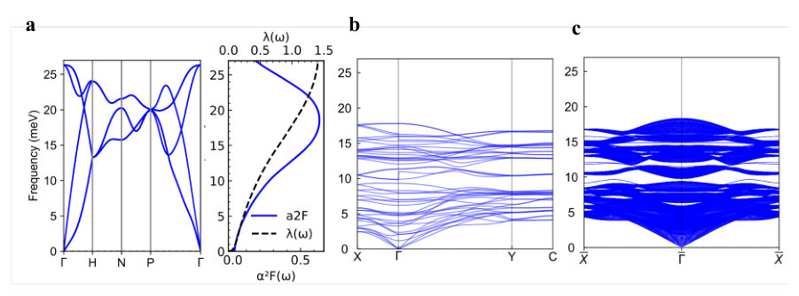
<figcaption class="paper-figure-caption"><b>Fig 3.</b> Figure 3. Bulk phononic band structure of constituent materials Nb, and 1D phononic dispersion of Bi4Br4.</figcaption>
</figure>
<figure class="paper-figure-card">
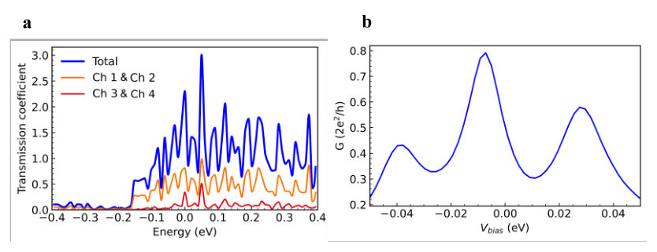
<figcaption class="paper-figure-caption"><b>Fig 4.</b> Figure 4. Calculated normal-state transmission and superconducting subgap conductance of Nb—1D Bi4Br4—Nb weak link.</figcaption>
</figure>
<figure class="paper-figure-card">
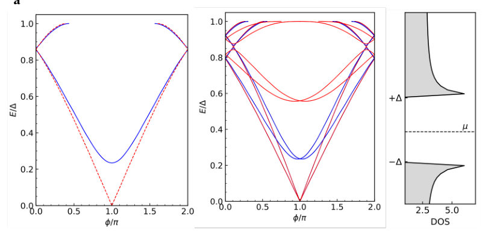
<figcaption class="paper-figure-caption"><b>Fig 5.</b> Figure 5. Andreev bound states of Nb—1D Bi4Br4—Nb weak link, considering both single-channel and multichannel models.</figcaption>
</figure>
</div>

<p><strong>Summary.</strong> This work theoretically investigates using a topological insulator nanoribbon (Bi4Br4) as the weak link in a superconducting Josephson junction. By calculating the Andreev bound state spectrum and current-phase relation, the authors demonstrate that this structure achieves nearly ballistic transport. This results in a highly phase-sensitive supercurrent, positioning it as a promising platform for next-generation on-chip magnetic sensors.</p>
<p><strong>Why it may be interesting.</strong> While focused on condensed matter superconductivity, the strong reliance on topological edge states and quantum confinement effects in a mesoscopic junction makes it relevant to open quantum systems modeling where boundary conditions dictate macroscopic behavior.</p>
<details>
<summary>Detailed structure</summary>
<p><strong>Main problem.</strong> The goal is to design highly sensitive, compact magnetic-field sensors using superconducting weak links that exploit topological edge states for ballistic transport.</p>
<p><strong>Main result.</strong> The Nb-1D Bi4Br4-Nb junction exhibits a non-sinusoidal current-phase relation with high forward skewness, indicating strong phase sensitivity suitable for advanced magnetic sensing applications.</p>
<p><strong>Method.</strong> Theoretical calculations employing Density Functional Theory (DFT) and the Non-Equilibrium Green's Function (NEGF) formalism are used to model quasiparticle transport and Andreev bound states (ABS).</p>
<p><strong>Model / system.</strong> The system is a Josephson junction formed by superconducting Niobium (Nb) electrodes connected via a one-dimensional nanoribbon of the topological insulator Bi4Br4. The physics relies on proximity-induced superconductivity into the topologically protected edge states.</p>
<p><strong>Key observables.</strong> Non-sinusoidal Current-Phase Relation (CPR), high forward skewness (+1.74), and phase sensitivity to external magnetic fields.</p>
<p><strong>Important parameters / regimes.</strong> The ratio of junction length to coherence length ($\lambda = L/\xi$), the superconducting gap ($\Delta \approx 4$ meV for Nb), and the transmission coefficient ($ au$).</p>
<p><strong>Assumptions / limitations.</strong> The topological edge states are treated as normal metallic channels exhibiting ballistic transport, and the bulk superconductors (Nb) are modeled using conventional BCS-like s-wave pairing.</p>
<p><strong>Figures summary.</strong> Figures illustrate ABS energy-phase dispersion curves showing thickness dependence and avoided crossings; other figures map out the CPR vs. phase ($\varphi$) at various magnetic fields.</p>
<p><strong>Paper structure.</strong> The paper progresses from establishing the need for high-transparency weak links, detailing the theoretical framework (DFT/Wannier basis), calculating the ABS spectrum, deriving the Josephson current dependence on phase and thickness, and finally analyzing how external magnetic fields tune this phase sensitivity.</p>
</details>
<details>
<summary>Abstract</summary>
<p>Superconducting weak links with high transparency offer an appealing approach for designing compact magnetic-field sensors, as their phase-dependent Andreev bound-state (ABS) spectrum produces a strong flux-to-signal response with minimal dissipation. One way to achieve ballistic transport in the weak link is to use the edge states of topological insulators, since these states resist backscattering and provide a unique path to developing topological insulator-based weak-link devices for highly efficient magnetic-field sensing. Building on this, we propose a weak-link device using superconducting Nb electrodes and a nanoribbon of $\text{Bi}_4\text{Br}_4$ as the normal region, forming a Nb-1D (one-dimensional) $\text{Bi}_4\text{Br}_4$-Nb Josephson junction. We develop first-principles tight-binding Hamiltonians and orbital-resolved interface couplings in the Wannier basis, including spin-orbit coupling, based on density functional theory (DFT) calculations. The Eliashberg spectral function of bulk Nb, obtained via density functional perturbation theory (DFPT), indicates an electron-phonon coupling strength of 1.19 and a transition temperature of about 9 K, aligning well with conventional superconductivity in Nb. The subgap conductance is primarily influenced by Andreev processes. The ABS spectrum leads to a non-sinusoidal current-phase relation (CPR) with high forward skewness ($+$1.74) and phase sensitivity to the magnetic field. Overall, our findings suggest that the Nb-1D $\text{Bi}_4\text{Br}_4$-Nb weak link is a promising platform for on-chip superconducting magnetic sensors, compatible with scalable nanofabrication and broader development of topological-superconductor hybrid electronics.</p>
</details>
<p><sub><a href="#top">↑ back to top</a></sub></p>

<p><a id="paper-2606.08999"></a></p>
<h3 id="superconducting-diode-effect-in-magnetic-superconductors-realized-by-nonreciprocal-domain-wall-dynamics"><a href="http://arxiv.org/abs/2606.08999v1">Superconducting diode effect in magnetic superconductors realized by nonreciprocal domain-wall dynamics</a></h3>
<p><strong>Authors:</strong> Dong Hui Han, Suk Bum Chung, Se Kwon Kim<br>
<strong>Type:</strong> theory · <strong>Category:</strong> other · <strong>PDF:</strong> <a href="https://arxiv.org/pdf/2606.08999v1">https://arxiv.org/pdf/2606.08999v1</a><br>
<strong>Analysis basis:</strong> full PDF text, analyzed in chunks
<strong>Topic relevance:</strong> <code>exotic spin models in light-matter</code> <strong>3/5</strong> · <code>non-equilibrium dynamics</code> <strong>3/5</strong> · <code>spintronics-quantum-optics interface</code> <strong>3/5</strong> · <code>driven-dissipative phase transition</code> <strong>2/5</strong> · <code>non-equilibrium universality</code> <strong>2/5</strong> · <code>Frenkel-Kontorova</code> <strong>1/5</strong> · <code>Keldysh / 2PI / non-Gaussian methods</code> <strong>1/5</strong> · <code>analog quantum simulation</code> <strong>1/5</strong> · <code>correlated / nonlocal dissipation</code> <strong>1/5</strong> · <code>methods for driven-dissipative</code> <strong>1/5</strong></p>
<div class="figure-strip-hint">↔ Scroll figures horizontally</div>
<div class="paper-figures-scroll">
<figure class="paper-figure-card">
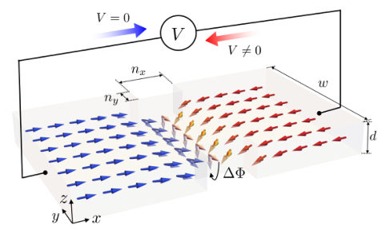
<figcaption class="paper-figure-caption"><b>Fig 1.</b> FIG. 1. Schematics of the SDE induced by the DW precession ∆˙Φ in the nonreciprocal WB. In the thin film of width w and thickness d, the DW is pinned at a notch characterized by the geometric parameters nx and ny. The measured voltage V originates from the emergent electric fields [Eqs. (13) and (34)]. For the bias current of the equal magnitude, the volt- age V across the DW vanishes for one direction (right in the figure) and is finite for the other direction (left in the figure), thereby giving rise to the diode effect.</figcaption>
</figure>
<figure class="paper-figure-card">
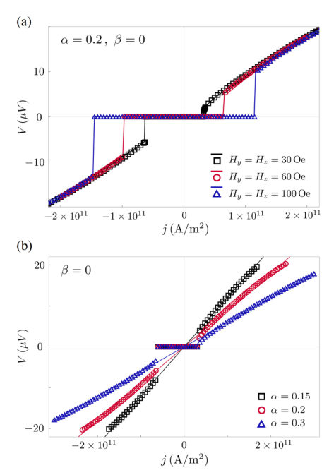
<figcaption class="paper-figure-caption"><b>Fig 2.</b> FIG. 2. I-V curves of a pinned DW in a notch obtained from simulations with Hy = Hz and β = 0. (a) shows the dependence on the magnetic field intensity where α = 0.2. The solid lines represent the numerical solutions from the EOMs [Eqs. (17) and (18)], which are used to determine kp = 0.45 × 10−3 N/m. (b) shows the dependence on α where Hy = Hz = 30 Oe. The solid lines represent ⟨V ⟩= −2P⟨˙Φ⟩ [Eqs. (13) and (19)]. For α = 0.15 and α = 0.2, the DW is depinned from the notch at jdep = 1.74 × 1011A/m2 and jdep = 2.35 × 1011A/m2, respectively.</figcaption>
</figure>
<figure class="paper-figure-card">
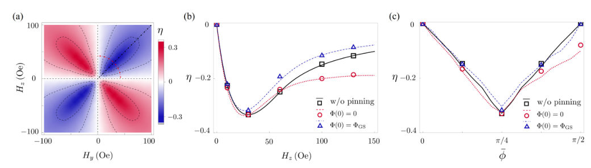
<figcaption class="paper-figure-caption"><b>Fig 3.</b> FIG. 3. Plots of the diode efficiency η [Eq. (7)] for various magnetic field conditions. (a) Numerical results obtained from the EOMs [Eqs. (5) and (6)] for |Hy|, |Hz| ≤100 Oe, where α = 0.2 and β = 0. The black dashed lines indicate contours of η = 0, 0.1, 0.2. (b) and (c) present comparisons with micromagnetic simulations for the black dash-dotted line Hy = Hz &gt; 0 and the red dash-dotted line (Hy, Hz) = √</figcaption>
</figure>
<figure class="paper-figure-card">
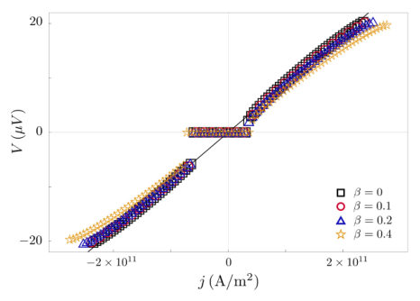
<figcaption class="paper-figure-caption"><b>Fig 4.</b> FIG. 4. I-V curves of a pinned DW for various β obtained from simulations with Hy = Hz = 30 Oe and α = 0.2. The black solid line represents ⟨V ⟩= −2P⟨˙Φ⟩[Eqs. (13) and (19)].</figcaption>
</figure>
<figure class="paper-figure-card">
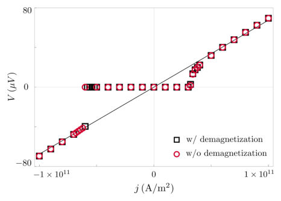
<figcaption class="paper-figure-caption"><b>Fig 5.</b> FIG. 5. I-V curves showing the effect of demagnetization on the precessional dynamics of a DW pinned at a notch. Simulations are performed with Hy = Hz = 226 Oe and M = 40 kA/m, while all other material parameters are the same as those used in the main text. The square symbols rep- resent the case including the demagnetization effect, whereas the circular symbols correspond to the case neglecting demag- netization but including local hard-axis anisotropy. The black solid line represents ⟨V ⟩= −2P⟨˙Φ⟩[Eqs. (13) and (19)].</figcaption>
</figure>
</div>

<p><strong>Summary.</strong> This paper theoretically establishes that the superconducting diode effect can arise intrinsically in ferromagnetic superconductors due to the nonreciprocal dynamics of magnetic domain walls. By analyzing the Walker breakdown mechanism, the authors derive criteria showing how this topological defect acts as a nanoscale platform for nonlinear superconducting functionalities without needing complex heterostructures.</p>
<p><strong>Why it may be interesting.</strong> This work connects topological defects (DWs) and fundamental magnetic dynamics (LLG equation) directly to macroscopic quantum phenomena (superconductivity), providing a mechanism for spintronic functionality within a single material system, which is highly relevant for condensed matter theorists studying emergent gauge fields and non-equilibrium superconductivity.</p>
<details>
<summary>Detailed structure</summary>
<p><strong>Main problem.</strong> The study demonstrates how the superconducting diode effect (SDE) can emerge intrinsically from nonreciprocal dynamics of magnetic domain walls (DWs) within ferromagnetic superconductors (FMSCs). This mechanism circumvents the need for complex engineered heterostructures.</p>
<p><strong>Main result.</strong> Nonreciprocal Walker breakdown in DW motion leads to asymmetric current-voltage characteristics, establishing a superconducting diode effect with a maximum efficiency ($\eta_{max}$) of 1/3. The analysis confirms that topological defects can serve as an intrinsic platform for nonlinear nonreciprocal functionalities.</p>
<p><strong>Method.</strong> The authors use analytical derivations based on the Landau-Lifshitz-Gilbert (LLG) equation and Ginzburg-Landau free energy functionals, extending models from simple ferromagnets to FMSCs via emergent gauge fields. These theoretical results are validated against micromagnetic simulations.</p>
<p><strong>Model / system.</strong> The system is a magnetic superconductor containing domain walls whose dynamics are governed by coupled equations derived from minimizing the superconducting and magnetic free energies. The model incorporates effects like pinning potentials, demagnetization, and spin-momentum coupling inherent to FMSCs.</p>
<p><strong>Key observables.</strong> Superconducting Diode Effect (SDE) characterized by nonreciprocal critical supercurrent densities ($j_{\pm c}$) and diode efficiency ($\eta$).</p>
<p><strong>Important parameters / regimes.</strong> External magnetic fields ($H_y, H_z$), Gilbert damping parameter ($\alpha$), pinning strength ($k_p$), and the condition for maximum efficiency ($H_{max} = \sqrt{2K_1}/\pi M$).</p>
<p><strong>Assumptions / limitations.</strong> The analysis often relies on the adiabatic limit (neglecting nonadiabatic effects) and assumes specific field configurations ($H_y=H_z>0$) to maximize the effect.</p>
<p><strong>Figures summary.</strong> Figures illustrate schematic representations of SDE via DW precession, I-V curves showing asymmetric behavior dependent on magnetic fields, and comparisons between theoretical predictions and micromagnetic simulations for $\eta$.</p>
<p><strong>Paper structure.</strong> The paper progresses by first establishing the nonreciprocal Walker breakdown in simple ferromagnets, then extending this analysis to incorporate superconducting effects using a Ginzburg-Landau formalism, culminating in the derivation of criteria for realizing the SDE in FMSCs.</p>
</details>
<details>
<summary>Abstract</summary>
<p>A superconducting diode effect is shown to arise in ferromagnetic superconductors through the nonreciprocal dynamics of magnetic domain walls. Specifically, we show that current-driven dynamics of a magnetic domain wall under a certain external field can exhibit a nonreciprocal Walker breakdown, possessing two distinct direction-dependent critical currents beyond which the domain wall precesses continuously. In ferromagnetic superconductors, the constant rotation of a domain wall is shown to give rise to phase slips, opening up dissipation channels, whereby the nonreciprocal Walker breakdown is mapped to the superconducting diode effect. For the nonreciprocal Walker breakdown of a magnetic domain wall, we analytically examine its dependence on the magnetic field and the Gilbert damping and verify the theoretical results with micromagnetic simulations. We then extend the analysis to ferromagnetic superconductors by considering additional effects from the superconductivity and identify criteria for experimental conditions to realize the predicted superconducting diode effect. Our work demonstrates that topological defects, such as domain walls, in magnetic superconductors can serve as an intrinsic nanoscale platform for nonlinear nonreciprocal superconducting functionalities within a single homogeneous material, circumventing the need for complicated engineered heterostructures and thereby enabling the miniaturization of superconducting devices down to the nanometer scale that is challenging to achieve with conventional Josephson junctions.</p>
</details>
<p><sub><a href="#top">↑ back to top</a></sub></p>

<p><a id="paper-2606.08647"></a></p>
<h3 id="protein-dynamics-beyond-structure-prediction"><a href="http://arxiv.org/abs/2606.08647v1">Protein Dynamics Beyond Structure Prediction</a></h3>
<p><strong>Authors:</strong> Juliette Griffié, Sviatlana Shashkova, Antonio Ciarlo, Sreekanth K. Manikandan, Claes Andréasson, Malin Bäckström, Tristan Bereau, Hjalmar Brismar, Carlos Bustamante, Marta Carroni, Roberto Covino, Andreas Dahlin, Sebastian Deindl, Lucie Delemotte, Arne Elofsson, John Eriksson, Giovanna Fragneto, Anders Gunnarsson, Per Hammarström, Caroline Ingre, Christian Kaiser, Petronella Kettunen, Mark C. Leake, Benjamin Loos, Anna Månberg, Antonia S. J. S. Mey, Richard Neutze, Thomas Nyström, Karl Palmås, Charley Schaefer, Markus J. Tamás, Nicola Ticozzi, Tomás S. Pilvelic, Jacopo Sacquegno, B. M., Tijms, Gunnar von Heijne, Björn Wallner, Vitali Zhaunerchyk, Simon Olsson, Joana B. Pereira, Julia Fernandez-Rodriguez, Fredrik Westerlund, Giovanni Volpe<br>
<strong>Type:</strong> both · <strong>Category:</strong> statistical mechanics · <strong>PDF:</strong> <a href="https://arxiv.org/pdf/2606.08647v1">https://arxiv.org/pdf/2606.08647v1</a><br>
<strong>Analysis basis:</strong> full PDF text, analyzed in chunks
<strong>Topic relevance:</strong> <code>methods for driven-dissipative</code> <strong>3/5</strong> · <code>non-equilibrium dynamics</code> <strong>3/5</strong> · <code>analog quantum simulation</code> <strong>2/5</strong> · <code>driven-dissipative phase transition</code> <strong>2/5</strong> · <code>Keldysh / 2PI / non-Gaussian methods</code> <strong>1/5</strong> · <code>correlated / nonlocal dissipation</code> <strong>1/5</strong> · <code>entanglement &amp; information structure</code> <strong>1/5</strong> · <code>measurement-induced transitions</code> <strong>1/5</strong> · <code>non-equilibrium universality</code> <strong>1/5</strong> · <code>quantum measurements</code> <strong>1/5</strong> · <code>scars &amp; prethermalization</code> <strong>1/5</strong></p>
<div class="figure-strip-hint">↔ Scroll figures horizontally</div>
<div class="paper-figures-scroll">
<figure class="paper-figure-card">
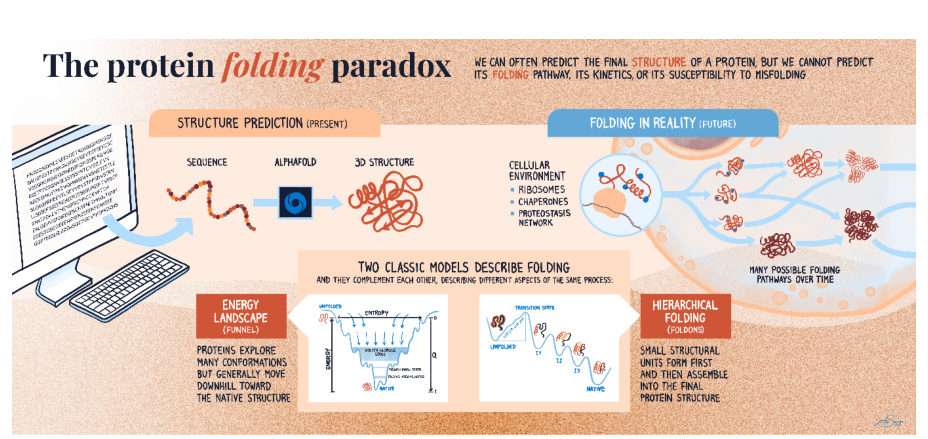
<figcaption class="paper-figure-caption"><b>Fig 1.</b> Figure 1. The protein folding paradox. Currently, models exist that describe protein folding. However, despite the advances in experimental methods and AI towards revealing protein structure, we are still lacking a detailed understanding of dynamics and precise folding pathways. Graphics by J. Saquegno.</figcaption>
</figure>
<figure class="paper-figure-card">

<figcaption class="paper-figure-caption"><b>Fig 2.</b> Figure 2. Experimental systems in folding studies. Mechanistic determinants of folding pathways cannot be separated from the context in which folding occurs. Hence, folding must be understood simultaneously at a molecular, cellular, and organismal levels. However, bridging time and size scales remains one of the central challenges in developing a predictive theory of folding. Graphics by J. Saquegno.</figcaption>
</figure>
<figure class="paper-figure-card">

<figcaption class="paper-figure-caption"><b>Fig 3.</b> Figure 3. Computational advances in protein folding studies. Current approaches address multiple levels of resolution and methodological frameworks, however, none of the existing methods provides quantitative and dynamic information of the relationship between protein sequence and folding mechanism at all-atom resolution and at scale. Graphics by J. Saquegno.</figcaption>
</figure>
<figure class="paper-figure-card">

<figcaption class="paper-figure-caption"><b>Fig 4.</b> Figure 4. A roadmap towards understanding protein folding dynamics. Graphics by J. Saquegno.</figcaption>
</figure>
</div>

<p><strong>Summary.</strong> This review argues that predicting protein function requires understanding its dynamic folding pathways and kinetics, not just its final static structure. It outlines a roadmap for integrating single-molecule experiments with multiscale computational models to build predictive frameworks. The ultimate goal is to achieve quantitative control over molecular self-assembly for therapeutic design.</p>
<p><strong>Why it may be interesting.</strong> While focused on biomolecules, the underlying physics—modeling complex systems traversing high-dimensional energy landscapes with stochastic transitions—shares conceptual parallels with non-equilibrium statistical mechanics and open quantum system dynamics.</p>
<details>
<summary>Detailed structure</summary>
<p><strong>Main problem.</strong> The field needs to move beyond predicting static protein structures to quantitatively understanding the dynamic, stochastic pathways of folding, conformational changes, and self-assembly.</p>
<p><strong>Main result.</strong> A predictive framework is required that integrates high-resolution single-molecule measurements with multiscale modeling to map sequence information onto kinetic energy landscapes.</p>
<p><strong>Method.</strong> The paper reviews a roadmap combining time-resolved single-molecule experiments (e.g., force spectroscopy) with advanced computational techniques like Markov State Models and machine learning.</p>
<p><strong>Model / system.</strong> The system is the protein folding process, viewed as traversing a rugged free-energy landscape characterized by multiple metastable intermediate states and transition barriers.</p>
<p><strong>Key observables.</strong> Folding trajectories, kinetic rates (folding/unfolding), barrier heights, conformational ensembles, and kinetic partitioning between functional and misfolded states.</p>
<p><strong>Important parameters / regimes.</strong> Temperature, force applied (in single-molecule experiments), chaperone concentration, and the time scale separation across different physical processes.</p>
<p><strong>Assumptions / limitations.</strong> The central assumption is that protein function depends on dynamic pathways and ensemble sampling, not just the lowest energy static structure. A major limitation noted is the lack of standardized data infrastructure for kinetics.</p>
<p><strong>Figures summary.</strong> Figures illustrate a roadmap showing the necessary transition from static structure prediction to quantitative pathway prediction by integrating diverse experimental and computational methods.</p>
<p><strong>Paper structure.</strong> The paper establishes the limitations of current structural biology (static endpoints), reviews existing dynamic techniques across multiple scales, proposes an iterative cycle where experiments constrain models, and outlines the need for standardized data infrastructure to achieve predictive kinetics.</p>
</details>
<details>
<summary>Abstract</summary>
<p>The ability to predict protein three-dimensional structures from amino acid sequences is a landmark achievement in molecular biology, where recent deep learning approaches such as AlphaFold are the culmination of decades of work. Yet, the quantitative understanding of how protein sequences give rise to dynamic conformational changes and higher-order assemblies remains unsolved. Folding and conformational states are dynamic, stochastic processes, shaped by sequence, energy, co-translational constraints, chaperone machineries, and the physicochemical conditions of the cellular environment. Recent advances now position the field to move beyond static structural endpoints toward a mechanistic understanding of folding dynamics in living systems. Single-molecule techniques enable time-resolved observation of folding trajectories and intermediate states hitherto hidden by traditional structural biology approaches, while computational innovations and data-driven approaches offer new ways to integrate heterogeneous data across scales. In this Roadmap, we review the current conceptual landscape of protein folding, examine the experimental and theoretical gaps that remain, and discuss emerging strategies that integrate high-resolution measurements with multiscale modeling. We outline a roadmap toward a quantitative and predictive science of protein folding dynamics, conformational kinetics, and macromolecular self-assembly. Realizing this vision would transform our understanding of the dynamics of molecular self-organization, from the folding of individual polypeptides to the emergence of dynamic macromolecular complexes. This will enable rational control of folding and misfolding in health and disease, extend protein engineering principles beyond static structural design, and establish a mechanistic foundation for predictive and personalized interventions in proteostasis-related disorders.</p>
</details>
<p><sub><a href="#top">↑ back to top</a></sub></p>

<p><a id="paper-2606.07921"></a></p>
<h3 id="coherent-control-of-chirality-in-weyl-semimetals"><a href="http://arxiv.org/abs/2606.07921v1">Coherent control of chirality in Weyl semimetals</a></h3>
<p><strong>Authors:</strong> Amar Bharti, Margarita Khokhlova, Misha Ivanov, Gopal Dixit<br>
<strong>Type:</strong> theory · <strong>Category:</strong> other · <strong>PDF:</strong> <a href="https://arxiv.org/pdf/2606.07921v1">https://arxiv.org/pdf/2606.07921v1</a><br>
<strong>Analysis basis:</strong> full PDF text, analyzed in chunks
<strong>Topic relevance:</strong> <code>Keldysh / 2PI / non-Gaussian methods</code> <strong>3/5</strong> · <code>methods for driven-dissipative</code> <strong>3/5</strong> · <code>spintronics-quantum-optics interface</code> <strong>3/5</strong> · <code>driven-dissipative phase transition</code> <strong>2/5</strong> · <code>non-equilibrium dynamics</code> <strong>2/5</strong> · <code>exotic spin models in light-matter</code> <strong>1/5</strong> · <code>interference shaping light</code> <strong>1/5</strong> · <code>non-equilibrium universality</code> <strong>1/5</strong></p>
<div class="figure-strip-hint">↔ Scroll figures horizontally</div>
<div class="paper-figures-scroll">
<figure class="paper-figure-card">
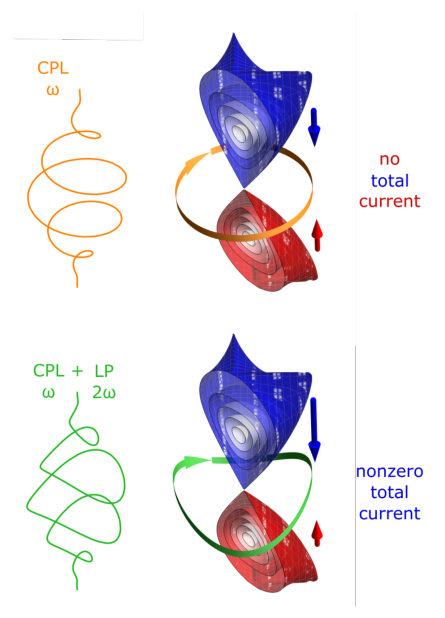
<figcaption class="paper-figure-caption"><b>Fig 1.</b> FIG. 1. Schematics for the Weyl nodes driven by single- and two-colour field. A single-</figcaption>
</figure>
<figure class="paper-figure-card">
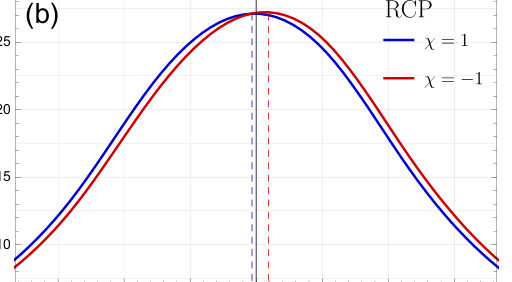
<figcaption class="paper-figure-caption"><b>Fig 2.</b> FIG. 2. Conduction band population and its asymmetry in single-colour field. Residual</figcaption>
</figure>
<figure class="paper-figure-card">

<figcaption class="paper-figure-caption"><b>Fig 3.</b> FIG. 3. Conduction band population and its asymmetry in two-colour field. (a) Con-</figcaption>
</figure>
<figure class="paper-figure-card">
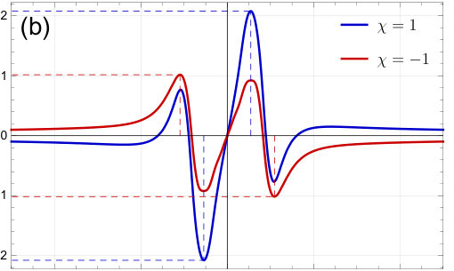
<figcaption class="paper-figure-caption"><b>Fig 4.</b> Figure 3(b) shows that even a weak 2ω field induces a pronounced population asymme-</figcaption>
</figure>
<figure class="paper-figure-card">
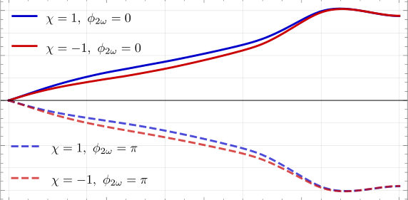
<figcaption class="paper-figure-caption"><b>Fig 5.</b> FIG. 4. Chirality of the photocurrent. Normalised photocurrent JDC around both Weyl nodes</figcaption>
</figure>
</div>

<p><strong>Summary.</strong> The paper demonstrates how using structured two-color light fields (combining $\omega$ CPL and $2\omega$ LP) can break the inherent symmetry of Weyl semimetals. This symmetry breaking allows for the selective excitation of opposite chirality nodes, resulting in a controllable, non-zero net photocurrent that is tunable by the relative phase and strength of the two laser colors.</p>
<p><strong>Why it may be interesting.</strong> This work provides an explicit quantum optical control scheme for manipulating electronic chiral currents in topological materials, which is highly relevant to advanced optoelectronics and spintronics.</p>
<details>
<summary>Detailed structure</summary>
<p><strong>Main problem.</strong> The primary goal is to achieve selective excitation of individual Weyl nodes in Weyl semimetals to generate a controllable net photocurrent, overcoming the natural cancellation from opposite chirality pairs.</p>
<p><strong>Main result.</strong> A combination of circularly-polarized ($\omega$) and phase-locked linearly-polarized ($2\omega$) light fields breaks inversion symmetry, inducing a measurable, sign-tunable, and chirality-dependent net photocurrent.</p>
<p><strong>Method.</strong> The analysis uses the semiconductor Bloch equations solved in the Houston basis to model carrier dynamics under time-dependent electromagnetic fields.</p>
<p><strong>Model / system.</strong> The system is an inversion-symmetric Weyl semimetal described by low-energy Hamiltonians near the nodes. The dynamics are driven by a total vector potential combining CPL ($\omega$) and LP ($2\omega$) components.</p>
<p><strong>Key observables.</strong> Net photocurrent ($J_{DC}$), current asymmetry ($\Delta J = J_{LCP} - J_{RCP}$), and population redistribution parameter ($\eta$).</p>
<p><strong>Important parameters / regimes.</strong> Relative field strength of the $2\omega$ field ($eta$) and its relative phase ($\phi_{2\omega}$). Optimal chiral selectivity is found in an intermediate regime ($0.2 \lesssim eta \lesssim 1.6$).</p>
<p><strong>Assumptions / limitations.</strong> The analysis relies on modeling the system using low-energy Hamiltonians near the Weyl nodes and solving the quantum master equation.</p>
<p><strong>Figures summary.</strong> Figures illustrate that single-color CPL light yields zero net current, while the two-color field generates a nonzero photocurrent. Specifically, Fig. 4 shows $J_{DC}$ reversing sign as $\phi_{2\omega}$ changes from $0^\circ$ to $180^\circ$, confirming chiral control.</p>
<p><strong>Paper structure.</strong> The paper establishes the problem of current cancellation in Weyl semimetals and introduces the two-color field mechanism. It details the theoretical framework using Bloch equations, demonstrates how symmetry breaking leads to chirality-dependent population asymmetry ($\eta$), and quantifies this effect through a controllable net photocurrent ($J_{DC}$).</p>
</details>
<details>
<summary>Abstract</summary>
<p>Weyl fermions in inversion-symmetric Weyl semimetals occur in pairs of opposite chirality, leading to symmetric optical responses under circularly-polarised light and a vanishing net photocurrent. Here, we show that tailored two-colour light fields break this symmetry and enable selective excitation of individual Weyl nodes. The interference between a circularly-polarised $ω$ field and a phase-locked linearly-polarised $2ω$ field generates a chirality-dependent redistribution of carriers in momentum space, resulting in a nonzero controllable photocurrent. We demonstrate that both the magnitude and sign of the photocurrent can be tuned via the relative phase and field strength of the two colours, and identify an optimal regime in which chiral selectivity is maximised. Our results establish a general route to optically-controlled chiral charge dynamics in Weyl semimetals using polarisation-structured light.</p>
</details>
<p><sub><a href="#top">↑ back to top</a></sub></p>

<p><a id="paper-2606.07983"></a></p>
<h3 id="equilibrium-spin-currents-in-altermagnet-junctions-josephson-like-and-anomalous-transport"><a href="http://arxiv.org/abs/2606.07983v1">Equilibrium spin currents in altermagnet junctions: Josephson-like and anomalous transport</a></h3>
<p><strong>Authors:</strong> Abhiram Soori<br>
<strong>Type:</strong> theory · <strong>Category:</strong> other · <strong>PDF:</strong> <a href="https://arxiv.org/pdf/2606.07983v1">https://arxiv.org/pdf/2606.07983v1</a><br>
<strong>Analysis basis:</strong> full PDF text, analyzed in chunks
<strong>Topic relevance:</strong> <code>spintronics-quantum-optics interface</code> <strong>3/5</strong> · <code>Keldysh / 2PI / non-Gaussian methods</code> <strong>2/5</strong> · <code>analog quantum simulation</code> <strong>2/5</strong> · <code>driven-dissipative phase transition</code> <strong>2/5</strong> · <code>methods for driven-dissipative</code> <strong>2/5</strong> · <code>Kondo &amp; dissipative impurity</code> <strong>1/5</strong> · <code>exotic spin models in light-matter</code> <strong>1/5</strong> · <code>non-equilibrium dynamics</code> <strong>1/5</strong> · <code>non-equilibrium universality</code> <strong>1/5</strong></p>
<div class="figure-strip-hint">↔ Scroll figures horizontally</div>
<div class="paper-figures-scroll">
<figure class="paper-figure-card">
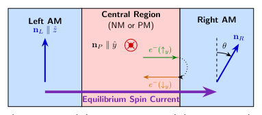
<figcaption class="paper-figure-caption"><b>Fig 1.</b> FIG. 1. Schematic diagram of the magnetic heterostructure. The setup consists of a central region (either an NM or a PM) sandwiched between two AMs with a relative N´eel vector angle θ. This phase-like parameter θ governs the flow of an equilibrium spin current through the junction, establishing a spintronic analog to the conventional Josephson effect. The two AMs have their N´eel vectors pointing in xz-plane, whereas the N´eel vector of the central PM points along y-direction.</figcaption>
</figure>
<figure class="paper-figure-card">
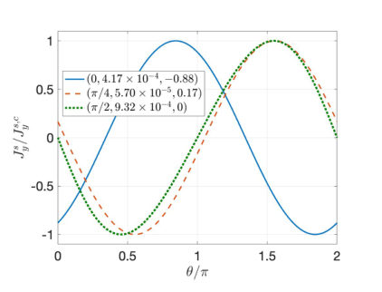
<figcaption class="paper-figure-caption"><b>Fig 2.</b> FIG. 3. ESC as a function of the relative angle θ between the N´eel vectors of the two AMs in an AM-PM-AM junction. Note the presence of a non-zero anomalous ESC, Js,a y , at θ = 0. The legend indicates the values of (ϕ, Js,c y , Js,a y /Js,c y ) for each respective curve. Note that anomalous ESC vanishes for ϕ = π/2 due to restored inversion symmetry along x- direction. System parameters are set to: La = 20, Lp = 10, Ly = 10, ta = 0.5t, tl = 0.2t, tr = 0.1t, tp = 0.5t, and f = 0.5.</figcaption>
</figure>
<figure class="paper-figure-card">
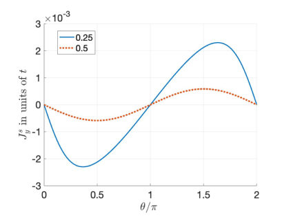
<figcaption class="paper-figure-caption"><b>Fig 3.</b> FIG. 2. Equilibrium spin current (ESC) as a function of the relative angle between the N´eel vectors of the two AMs in an AM-NM-AM junction. The various curves correspond to different filling factors f, as indicated in the legend. System parameters are set to: La = 20, Lp = 10, Ly = 10, ta = 0.5, tl = 0.2t, tr = 0.1t, and tp = 0.</figcaption>
</figure>
<figure class="paper-figure-card">
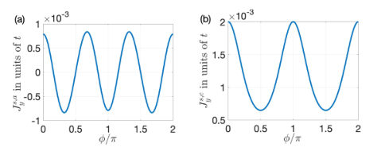
<figcaption class="paper-figure-caption"><b>Fig 4.</b> FIG. 4. (a) Anomalous ESC versus ϕ the angle made by the crystallographic axis along which the band bottoms for the two spin sectors are separated in PM with x-direction (b) Crit- ical current versus ϕ. Parameters are same as in Fig. 3, except f = 0.25.</figcaption>
</figure>
<figure class="paper-figure-card">
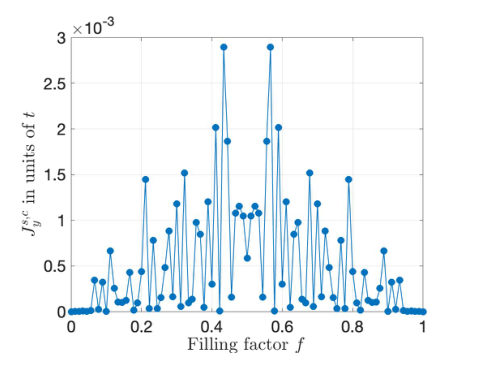
<figcaption class="paper-figure-caption"><b>Fig 5.</b> FIG. 5. Critical ESC versus filling factor. Parameters are same as in Fig. 2.</figcaption>
</figure>
</div>

<p><strong>Summary.</strong> This theoretical work explores equilibrium spin currents in altermagnet junctions using a tight-binding model. It distinguishes between conventional, angle-dependent Josephson-like transport across normal metals and an anomalous current induced by p-wave magnets. The findings highlight that symmetry breaking mechanisms can enable dissipationless spin flow even when magnetic alignment is perfect.</p>
<p><strong>Why it may be interesting.</strong> While focused on condensed matter magnetism, the study of dissipationless spin currents and phase-tunable transport mechanisms in novel magnetic materials like altermagnets has strong parallels with engineered superconducting junctions studied in AMO physics (e.g., Josephson effect).</p>
<details>
<summary>Detailed structure</summary>
<p><strong>Main problem.</strong> The study investigates the emergence of equilibrium spin currents (ESCs) in altermagnet junctions, contrasting conventional Josephson-like transport with anomalous spin current flow.</p>
<p><strong>Main result.</strong> Anomalous ESCs can be induced by replacing a normal metal spacer with a p-wave magnet, allowing finite spin current even when the magnetic order parameters are perfectly aligned. The critical current also exhibits mesoscopic quantum size effect fluctuations.</p>
<p><strong>Method.</strong> The investigation uses theoretical calculations based on a tight-binding lattice model to diagonalize the full Hamiltonian and calculate the expectation value of the spin current operator over occupied states.</p>
<p><strong>Model / system.</strong> The system models two-dimensional Altermagnet (AM) heterostructures connected by a central region, which can be either a Normal Metal (NM) or a p-wave Magnet (PM). The physics is governed by spin-dependent hopping terms and the relative angle ($   heta$) between the AM Néel vectors.</p>
<p><strong>Key observables.</strong> Equilibrium Spin Current (ESC), specifically $\sigma_y$-polarized, and its dependence on the relative angle ($   heta$), PM angle ($\phi$), and band filling ($f$).</p>
<p><strong>Important parameters / regimes.</strong> Relative angle ($   heta$) between AM Néel vectors; p-wave magnet angle ($\phi$); electron filling fraction ($f$).</p>
<p><strong>Assumptions / limitations.</strong> The analysis assumes spin remains a good quantum number in the central scattering region, and it models the system using a tight-binding lattice approach.</p>
<p><strong>Figures summary.</strong> Figures illustrate the dependence of ESC on $  heta$ for both NM (Josephson-like) and PM (anomalous) spacers. Other figures show the dependence on the PM angle ($\phi$) and pronounced fluctuations versus band filling ($f$).</p>
<p><strong>Paper structure.</strong> The paper systematically analyzes the spin current in AM-NM-AM junctions to establish Josephson-like behavior, then extends the model to AM-PM-AM junctions to demonstrate the anomalous transport mechanism driven by symmetry breaking. Finally, it discusses quantum size effects and symmetries.</p>
</details>
<details>
<summary>Abstract</summary>
<p>Altermagnets (AMs) offer a compelling platform for exploring novel spin-dependent phenomena in materials with zero net macroscopic magnetization. In this work, we theoretically investigate the emergence of equilibrium spin currents (ESCs) in two-dimensional AM heterostructures using a tight-binding lattice model. We first study an AM-normal metal-AM (AM-NM-AM) junction and demonstrate that the $σ_y$-polarized ESC exhibits a characteristic Josephson-like behavior, fundamentally governed by the relative angle ($θ$) between the Néel vectors of the two AMs pointing in $xz$-plane. Crucially, we show that replacing the central normal metal with a $p$-wave magnet (PM) induces an anomalous ESC. Analogous to the anomalous Josephson effect, the breaking of spatial inversion symmetry by the PM allows a finite, dissipationless spin current to flow even when the Néel vectors are perfectly aligned ($θ=0$). We establish that this anomalous transport is driven by an asymmetry in the quantum phases accumulated by right- and left-moving electrons undergoing spin-flip reflections. Finally, we show that the critical ESC exhibits pronounced fluctuations as a function of band filling, which we attribute to mesoscopic quantum size effects, including transverse subband quantization and longitudinal Fabry-Pérot resonances. Our findings highlight the potential of altermagnet junctions for designing dissipationless, phase-tunable spintronic devices.</p>
</details>
<p><sub><a href="#top">↑ back to top</a></sub></p>

<p><a id="paper-2606.08235"></a></p>
<h3 id="correlated-math1476math-symmetric-antiferromagnetic-topological-insulators-with-giant-nonlinear-anomalous-thermoelectrics"><a href="http://arxiv.org/abs/2606.08235v1">Correlated $\mathcal{PT}$-Symmetric Antiferromagnetic Topological Insulators with Giant Nonlinear Anomalous Thermoelectrics</a></h3>
<p><strong>Authors:</strong> Heng-Yu Di, Zhen-Gang Zhu, Gang Su<br>
<strong>Type:</strong> theory · <strong>Category:</strong> strongly correlated electrons · <strong>PDF:</strong> <a href="https://arxiv.org/pdf/2606.08235v1">https://arxiv.org/pdf/2606.08235v1</a><br>
<strong>Analysis basis:</strong> full PDF text, analyzed in chunks
<strong>Topic relevance:</strong> <code>analog quantum simulation</code> <strong>3/5</strong> · <code>Keldysh / 2PI / non-Gaussian methods</code> <strong>2/5</strong> · <code>driven-dissipative phase transition</code> <strong>2/5</strong> · <code>entanglement &amp; information structure</code> <strong>1/5</strong> · <code>exotic spin models in light-matter</code> <strong>1/5</strong> · <code>methods for driven-dissipative</code> <strong>1/5</strong> · <code>non-equilibrium dynamics</code> <strong>1/5</strong> · <code>non-equilibrium universality</code> <strong>1/5</strong> · <code>spintronics-quantum-optics interface</code> <strong>1/5</strong></p>
<div class="figure-strip-hint">↔ Scroll figures horizontally</div>
<div class="paper-figures-scroll">
<figure class="paper-figure-card">
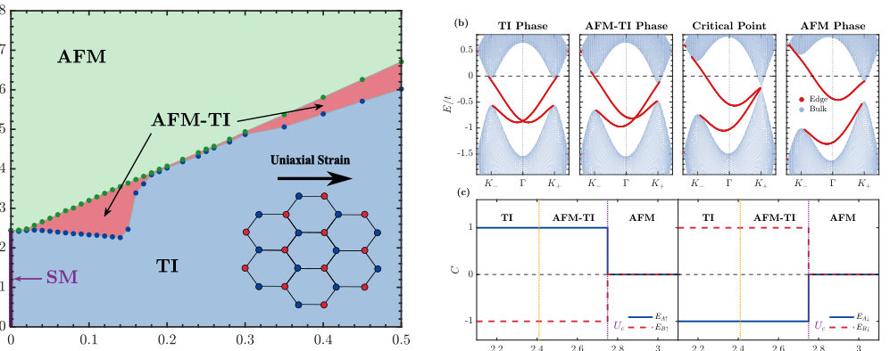
<figcaption class="paper-figure-caption"><b>Fig 1.</b> FIG. 1. Phase diagram and topological transition in the extended Kane-Mele-Hubbard model. (a) Ground- state phase diagram in the (U, λ) parameter space. Parameters are set as: η1 = 1.05, nA = nB = 1.005, t2 = 0.1t, and kBT = 0.01t. Four phases are identified: Semimetal (SM), Topological Insulator (TI), Antiferromagnetic TI (AFM-TI), and trivial Antiferromagnetic Insulator (AFM). The magnetic phase transition from TI to AFM-TI is marked by the onset of a nonzero local magnetization (m ̸= 0), while the topological transition from AFM-TI phase to AFM phase is determined by the bulk gap closing (∆= 0). Inset: Honeycomb lattice schematic with modified bond vectors δi. (b) Band structures across...</figcaption>
</figure>
<figure class="paper-figure-card">
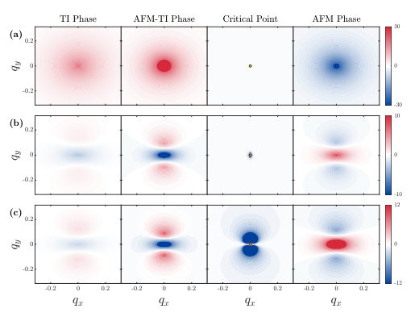
<figcaption class="paper-figure-caption"><b>Fig 2.</b> FIG. 2. Microscopic origin and momentum-space geo- metric evolution. Distributions of (a) the Berry curvature (Ωyx), (b) the qy-even components of the BCP dipole (Λyxx even), and (c) the TBCP dipole (Λyxx,t even ) near the Dirac valley K+. The four columns illustrate the evolution across four distinct regimes at a fixed λ = 0.05t. The yellow dot in the third column marks the gapless Dirac point where the geometric quantities diverge.</figcaption>
</figure>
<figure class="paper-figure-card">

<figcaption class="paper-figure-caption"><b>Fig 3.</b> FIG. 3. Giant nonlinear anomalous responses at the topological critical point. Calculated non-zero compo- nents of the nonlinear anomalous electrical (σyxx), thermo- electric (αyxx), and thermal (κyxx) conductivities as a func- tion of the correlation U. All coefficients are normalized by their respective absolute maximum values, with the sign of κyxx inverted for visual comparison.</figcaption>
</figure>
<figure class="paper-figure-card">

<figcaption class="paper-figure-caption"><b>Fig 4.</b> FIG. 4. Tunability of the topological phase transi- tions. Evolution of the band Chern number C, which de- marcates the topological transition of the AFM-TI phase, as a function of (a) the strain parameter η1 and (b) the electron filling n = nA = nB for various interaction strengths U.</figcaption>
</figure>
</div>

<p><strong>Summary.</strong> This work theoretically explores correlated Antiferromagnetic Topological Insulators using an extended Kane-Mele-Hubbard model. It demonstrates that electron correlations stabilize a unique $\mathcal{PT}$-symmetric phase, and critically, the topological phase transition within this system causes a giant enhancement in nonlinear anomalous thermoelectric responses. The results show these tunable transport signatures can be controlled by external stimuli like strain or gating.</p>
<p><strong>Why it may be interesting.</strong> While focused on condensed matter magnetism, the study of symmetry breaking ($\mathcal{PT}$-symmetry) and emergent non-linear response tensors driven by band topology provides theoretical frameworks relevant to open quantum systems dynamics and engineered material responses.</p>
<details>
<summary>Detailed structure</summary>
<p><strong>Main problem.</strong> To investigate novel physical phenomena in Antiferromagnetic (AFM) spintronics by studying correlated topological states that exhibit giant nonlinear anomalous thermoelectric responses.</p>
<p><strong>Main result.</strong> Electron correlations stabilize a $\mathcal{PT}$-symmetric AFM-TI phase, and the topological phase transition at gap closure leads to a giant enhancement of all nonlinear anomalous transport coefficients.</p>
<p><strong>Method.</strong> The study uses theoretical modeling based on an extended Kane-Mele-Hubbard model, employing the Hartree-Fock mean-field approximation for correlation effects.</p>
<p><strong>Model / system.</strong> The system is modeled by an extended Kane-Mele-Hubbard Hamiltonian on a honeycomb lattice, incorporating hopping terms, SOC ($\lambda$), and the Hubbard interaction ($U$). The analysis focuses on the transition between Semimetal (SM), Topological Insulator (TI), AFM-TI, and trivial AFM phases.</p>
<p><strong>Key observables.</strong> Nonlinear anomalous electrical ($\sigma_{abc}$), thermoelectric ($\alpha_{abc}$), and thermal ($\kappa_{abc}$) conductivities; topological invariants like the Chern number ($C$).</p>
<p><strong>Important parameters / regimes.</strong> On-site Coulomb interaction ($U$), SOC strength ($\lambda$), uniaxial strain ($\eta_1$), and electron filling ($n$).</p>
<p><strong>Assumptions / limitations.</strong> The analysis relies on the Hartree-Fock mean-field approximation for treating electron correlations, and linear anomalous conductivities vanish in $\mathcal{PT}$-symmetric AFM-TIs.</p>
<p><strong>Figures summary.</strong> Figures illustrate phase diagrams in $(U, \lambda)$ space showing different topological phases; band structures across these regimes; and plots demonstrating the sharp peaks of nonlinear anomalous conductivities at the critical point ($U=U_c$).</p>
<p><strong>Paper structure.</strong> The paper systematically analyzes the electronic structure through various correlated magnetic phases (TI $
ightarrow$ AFM-TI $
ightarrow$ AFM), identifying the topological phase transition via gap closure, and then calculating the resulting giant enhancements in nonlinear transport responses.</p>
</details>
<details>
<summary>Abstract</summary>
<p>Topological states in antiferromagnets (AFMs) offer a promising platform for exploring novel physical phenomena and advancing the applications of AFM spintronics. The AFM topological insulator (TI) state stands out as one of the most representative and prominent cases. Unlike the previously proposed AFM-TI states in noninteracting systems, here we employ an extended Kane-Mele-Hubbard model to demonstrate that electron correlations can give rise to a $\mathcal{PT}$-symmetric AFM-TI state. This state breaks both spatial inversion symmetry $\mathcal{P}$ and time-reversal symmetry $\mathcal{T}$, and enables intrinsic topological nonlinear responses to dominate the leading-order dynamics of the system. The competition between electron correlations and spin-orbit coupling drives the system across a topological phase transition, where the closure of the bulk band gap induces singular behaviors in higher-order quantum geometric tensors. Such microscopic singular characteristics manifest macroscopically as pronounced enhancements in thermoelectric performance, charge conductivity, and thermal conductivity. These giant tunable transport signatures, which can be effectively modulated by mechanical strain and electrostatic gating, provide a feasible experimental route to probe and understand correlated topological materials.</p>
</details>
<p><sub><a href="#top">↑ back to top</a></sub></p>

<p><a id="paper-2606.09506"></a></p>
<h3 id="planar-hall-effect-in-single-and-bilayer-rashba-systems"><a href="http://arxiv.org/abs/2606.09506v1">Planar Hall effect in single and bilayer Rashba systems</a></h3>
<p><strong>Authors:</strong> Rahul Biswas, Sunit Das, Amit Agarwal<br>
<strong>Type:</strong> theory · <strong>Category:</strong> other · <strong>PDF:</strong> <a href="https://arxiv.org/pdf/2606.09506v1">https://arxiv.org/pdf/2606.09506v1</a><br>
<strong>Analysis basis:</strong> full PDF text, analyzed in chunks
<strong>Topic relevance:</strong> <code>spintronics-quantum-optics interface</code> <strong>3/5</strong> · <code>Keldysh / 2PI / non-Gaussian methods</code> <strong>2/5</strong> · <code>non-equilibrium dynamics</code> <strong>2/5</strong> · <code>analog quantum simulation</code> <strong>1/5</strong> · <code>driven-dissipative phase transition</code> <strong>1/5</strong> · <code>exotic spin models in light-matter</code> <strong>1/5</strong> · <code>methods for driven-dissipative</code> <strong>1/5</strong> · <code>non-equilibrium universality</code> <strong>1/5</strong></p>
<div class="figure-strip-hint">↔ Scroll figures horizontally</div>
<div class="paper-figures-scroll">
<figure class="paper-figure-card">

<figcaption class="paper-figure-caption"><b>Fig 1.</b> Figure 1. Zeeman coupling induced PHE in a single-layer Rashba 2DEG. (a) Electronic band dispersion, with the den- sity of states (DOS) indicated by the background color. (b) Variation of the longitudinal and transverse planar conduc- tivities, σZ xx and σZ yx as functions of µ for fixed angle θ = 30◦. For σZ xx, only the magnetic field-dependent contribution is shown; the Drude background is not included. (c,d) Angu- lar dependence of σZ yx and σZ xx, as the chemical potential µ varies. We use effective mass m = 1.2 me, Rashba parameter α = 0.66 eV˚A, magnetic field B = 0.3 T, temperature T = 50 K, and relaxation time τ = 1 ps.</figcaption>
</figure>
<figure class="paper-figure-card">

<figcaption class="paper-figure-caption"><b>Fig 2.</b> Figure 2. Zeeman-driven PHE in a bilayer Rashba 2DEG. (a) Electronic band dispersion, with the density of states (DOS) indicated by the background color. (b) Variation of the longitudinal and transverse conductivities, σZ xx and σZ yx as functions of µ for fixed angle θ = 30◦. The two response peaks occur near the band edges of the two Rashba layers. For σZ xx, only the magnetic field-dependent contribution is shown. (c,d) Angular dependence of σZ yx and σZ xx, as the chemical potential µ varies. We use equal effective masses, m = 1.2 me, Rashba parameters αA = 2αB = 0.66 eV˚A, interlayer hopping t = 0.5 eV, magnetic field B = 0.3 T, tem- perature T = 50 K, and relaxation time τ = 1 ps.</figcaption>
</figure>
<figure class="paper-figure-card">

<figcaption class="paper-figure-caption"><b>Fig 3.</b> Figure 3. Band geometric PHE in a Rashba bilayer. (a) Momentum-space distribution of the planar BC (ΩPl) and OMM (mPl) components for the lowest band. (b) BC and OMM driven B2-dependent planar responses as functions of chemical potential. (c) Longitudinal (σBG xx ) and transverse (σBG yx ) planar Hall conductivities for fixed angle θ = 30◦. The largest features occur near band edges, where the planar BC and OMM are enhanced. (d,e) Angular dependence of the planar Hall conductivities as µ varies. The transverse conductivity follows σBG yx ∝χBG yx;xy sin θ cos θ because χBG yx;xy is the dominant transverse tensor, whereas the longitudinal conductivity is dominated by χBG xx;xx and χBG xx;yy...</figcaption>
</figure>
<figure class="paper-figure-card">

<figcaption class="paper-figure-caption"><b>Fig 4.</b> Figure 4. Rotated coordinate system used to derive the AMC form of the PHE. The electric field E is along ˆx, the magnetic field B is along ˆx′, and the current components jx and jy are parallel and perpendicular to E, respectively.</figcaption>
</figure>
</div>

<p><strong>Summary.</strong> This paper theoretically investigates the Planar Hall Effect in Rashba 2DEGs, distinguishing between two sources: Zeeman coupling anisotropy and band geometric effects arising from interlayer delocalization. Using semiclassical transport theory, the authors show that while both mechanisms contribute, the Zeeman-induced response is numerically dominant for the studied system parameters.</p>
<p><strong>Why it may be interesting.</strong> While focused on condensed matter magnetotransport, the detailed analysis of symmetry constraints and the separation of distinct physical mechanisms (spin-momentum locking vs. topology) provides rigorous theoretical tools applicable to understanding exotic quantum transport phenomena in engineered quantum materials.</p>
<details>
<summary>Detailed structure</summary>
<p><strong>Main problem.</strong> The study investigates the Planar Hall Effect (PHE) in two-dimensional electron gases (2DEGs) exhibiting Rashba spin-orbit coupling.</p>
<p><strong>Main result.</strong> Two distinct mechanisms—Zeeman coupling and band geometric effects—are identified for generating PHE, with the Zeeman mechanism dominating in the considered parameter regime.</p>
<p><strong>Method.</strong> The analysis employs semiclassical Boltzmann transport theory and symmetry analysis to calculate planar Hall conductivity tensors.</p>
<p><strong>Model / system.</strong> The model involves single- and bilayer 2DEGs described by Hamiltonians incorporating Rashba SOC and an external magnetic field. The PHE is an anisotropic magnetotransport response from coplanar E and B fields.</p>
<p><strong>Key observables.</strong> Planar Hall Conductivity ($\sigma_{yx}$), Anisotropic Magnetoconductivity ($    ext{AMC} = \sigma_{\parallel} - \sigma_{\perp}$), Planar Berry Curvature ($\Omega_{  ext{Pl}}$), and Orbital Magnetic Moment ($\mathbf{m}_{    ext{Pl}}$).</p>
<p><strong>Important parameters / regimes.</strong> The PHE response is expected to be quadratic in the magnetic field and exhibit $\pi$-periodic angular dependence. The relative strength of Zeeman vs. Band Geometric contributions depends on Rashba asymmetry.</p>
<p><strong>Assumptions / limitations.</strong> The calculations rely on the semiclassical Boltzmann transport theory within the relaxation-time approximation (RTA).</p>
<p><strong>Figures summary.</strong> Figures illustrate band dispersions, and later figures show the calculated planar conductivities ($\sigma_{Z, yx}$ vs $\sigma_{B G, yx}$) for both mechanisms.</p>
<p><strong>Paper structure.</strong> The paper systematically analyzes the PHE by first establishing the general theoretical framework using semiclassical transport theory. It then derives separate expressions and calculates contributions from the Zeeman coupling mechanism (single-layer) and the band geometric/Berry curvature mechanism (bilayer), concluding with a comparison of their relative strengths.</p>
</details>
<details>
<summary>Abstract</summary>
<p>The planar Hall effect (PHE) is an anisotropic magnetotransport response generated by coplanar electric and magnetic fields. We investigate the PHE in single- and bilayer two-dimensional electron gases (2DEGs) with Rashba spin-orbit coupling and identify two distinct mechanisms: Zeeman coupling and a band geometric channel. In the Zeeman channel, an in-plane magnetic field distorts the Rashba spin-orbit-coupled band dispersion and generates anisotropic carrier velocities, producing a finite PHE. In an asymmetric Rashba bilayer, interlayer electronic delocalization generates finite planar Berry curvature and orbital magnetic moment components, giving rise to a band geometric PHE channel. Using semiclassical Boltzmann transport theory, we calculate the chemical potential and angular dependence of the planar Hall conductivity for both mechanisms. Symmetry analysis shows that the leading response is quadratic in the magnetic field and exhibits the characteristic $π$-periodic angular dependence. For the parameter regime considered here, the Zeeman-induced contribution dominates, while the band geometric channel provides a distinct symmetry-allowed contribution unique to asymmetric Rashba bilayers. Our results reveal microscopic origins of anisotropic magnetotransport in spin-orbit-coupled two-dimensional materials.</p>
</details>
<p><sub><a href="#top">↑ back to top</a></sub></p>

<p><a id="paper-2606.07740"></a></p>
<h3 id="phase-diagram-of-magnetic-math1503math-skyrmions-on-three-dimensional-lattices-and-the-toroidal-antiskyrmion"><a href="http://arxiv.org/abs/2606.07740v1">Phase diagram of magnetic $S^3$ Skyrmions on three-dimensional lattices and the toroidal antiSkyrmion</a></h3>
<p><strong>Authors:</strong> Niccolò Francini, Stefano Bolognesi, Sven Bjarke Gudnason, Roberto Menta<br>
<strong>Type:</strong> theory · <strong>Category:</strong> statistical mechanics · <strong>PDF:</strong> <a href="https://arxiv.org/pdf/2606.07740v1">https://arxiv.org/pdf/2606.07740v1</a><br>
<strong>Analysis basis:</strong> full PDF text, analyzed in chunks
<strong>Topic relevance:</strong> <code>exotic spin models in light-matter</code> <strong>3/5</strong> · <code>spintronics-quantum-optics interface</code> <strong>3/5</strong> · <code>analog quantum simulation</code> <strong>2/5</strong> · <code>Keldysh / 2PI / non-Gaussian methods</code> <strong>1/5</strong> · <code>driven-dissipative phase transition</code> <strong>1/5</strong> · <code>methods for driven-dissipative</code> <strong>1/5</strong></p>
<div class="figure-strip-hint">↔ Scroll figures horizontally</div>
<div class="paper-figures-scroll">
<figure class="paper-figure-card">

<figcaption class="paper-figure-caption"><b>Fig 1.</b> Figure 1. Numerical solution of the axially symmetric baryon with Dirichlet boundary conditions. The equatorial magnetic string pushes two halves of the Skyrmion to the boundaries of the box. (a) The profile function 𝜒of Eq. (23), (b) The total energy density with the red isosurface showing the positive region and the yellow isosurface showing the negative region, (c) the 𝑞𝑆2 topological charge density demonstrating the presence of the string, and (d) the 𝑞𝑆3 topological charge density showing the two half-Skyrmions’ charge at the end of the string.</figcaption>
</figure>
<figure class="paper-figure-card">

<figcaption class="paper-figure-caption"><b>Fig 2.</b> Figure 2. Finite temperature phase diagram for the axially symmetric model with the 𝛽-term in Eq. (51) obtained with fixed twisted bound- ary conditions for 𝐿= 26, together with 𝑇= 0 iterative minimization results. (a) The absolute value of the 𝑄𝑆2/𝐿estimates the number of strings in the string lattice phase (Str). Each string carries a half Skyrmion at its extrema, for a total of one Skyrmion per string. The Skyrmion number is given by the topological charge 𝑄𝑆3 in panel (b). The black dots mark specific heat maxima (not in the figure), while the lines represent a guide for the eye. The continuous line tracks the transition temperature, while the dotted line at 0.3 ≤𝐵c1 ≤0.4 fol- lows the...</figcaption>
</figure>
<figure class="paper-figure-card">

<figcaption class="paper-figure-caption"><b>Fig 3.</b> Figure 3. Distribution of the 𝜋2(𝑆2) topological charge and 𝜋3(𝑆3) topological charge per site in a zero temperature configuration for 𝐿= 34 and 𝐵= 0.6. (a) The cut at 𝑧= 𝐿/2 exposes a topological charge per site 𝑞𝑆2 arranged in a triangular pattern, corresponding to the string lattice. (b) The stretch of the strings along the 𝑧-direction is suggested by the cut at 𝑦= 𝐿/2. In this case, 𝑞𝑆2 fills cylinders along the 𝑧-direction, corresponding to the strings. Each string has a concentration of 𝜋3(𝑆3) topological charge at its ends, representing the splitting of a Skyrmion into two halves and detached by the string in between them. The background spins not involved in the string lattice align...</figcaption>
</figure>
<figure class="paper-figure-card">

<figcaption class="paper-figure-caption"><b>Fig 4.</b> Figure 4. Energy density comparison between a spin-spiral phase and a string lattice phase as a function of the Zeeman field 𝐵. The spin-spiral state is favored at low fields, up to 𝐵≈0.37, at which the string lattice becomes the lowest energy state. In this figure, the energy density of the string phase is estimated from a single string’s energy and size.</figcaption>
</figure>
<figure class="paper-figure-card">

<figcaption class="paper-figure-caption"><b>Fig 5.</b> Figure 5. Finite-temperature phase diagram for the (a) 𝜋2(𝑆2) topo- logical charge and (b) 𝜋3(𝑆3) topological charge for the case with the 𝛼-term, together with zero-temperature iterative minimization re- sults for 𝐿= 16 and periodic boundary conditions. For large fields, 𝐵&gt; 𝐵c4, the system is fully polarized at low temperatures. This phase is topologically trivial, with vanishing 𝜋2(𝑆2) and 𝜋3(𝑆3) topolog- ical charges. As the field decreases from large values, the system enters a low-temperature Skyrmion lattice phase, highlighted by the positive 𝜋3(𝑆3) topological charge, see red region in panel (b) for 𝐵c3 ≤𝐵≤𝐵c4. The skymions also carry 𝜋2(𝑆2) topological charge, which appears in blue...</figcaption>
</figure>
</div>

<p><strong>Summary.</strong> This paper theoretically investigates magnetic Skyrmions in three dimensions using an S^3 order parameter model stabilized by generalized DMI interactions. By combining continuum theory with lattice simulations, the authors map a complex phase diagram revealing multiple ordered phases. Crucially, they establish the existence of stable toroidal anti-solitons and provide a comprehensive framework for 3D topological magnetic textures.</p>
<p><strong>Why it may be interesting.</strong> This work provides a rich theoretical framework for understanding topological magnetic textures beyond 2D systems, which is highly relevant for designing novel quantum materials and spintronic devices.</p>
<details>
<summary>Detailed structure</summary>
<p><strong>Main problem.</strong> The study investigates the natural three-dimensional generalization of magnetic Skyrmions, modeling them using a sigma model from R^3 to S^3.</p>
<p><strong>Main result.</strong> The authors map out a complex phase diagram featuring spin-spiral, string lattice, and antiSkyrmion lattices, and find a stable toroidal anti-soliton with unit charge for the first time.</p>
<p><strong>Method.</strong> Methods include deriving continuum theories from generalized DMI terms, developing cubic-lattice discretizations, and employing Monte Carlo simulations to map finite-temperature phase diagrams.</p>
<p><strong>Model / system.</strong> The system is a magnetic material whose order parameter resides on the S^3 manifold. The energy functional includes Heisenberg exchange, Zeeman potential, and generalized Dzyaloshinskii–Moriya interactions ($\alpha$-term and $eta$-term).</p>
<p><strong>Key observables.</strong> Topological charges ($Q_{S^3}, Q_{S^2}$), phase boundaries (e.g., $B_{c1}, B_{c4}$), and the existence of toroidal anti-solitons.</p>
<p><strong>Important parameters / regimes.</strong> DMI coupling constants ($\kappa$), external magnetic field ($B$), and temperature ($T$).</p>
<p><strong>Assumptions / limitations.</strong> The analysis relies on deriving continuum limits from lattice discretizations and using approximations like spatial averaging for certain ground state calculations.</p>
<p><strong>Figures summary.</strong> Figures illustrate the dependence of topological charges ($Q_{S2}, Q_{S3}$) on external field $B$ and temperature, visualizing string lattices, Skyrmion lattices, and toroidal antiSkyrmions.</p>
<p><strong>Paper structure.</strong> The paper progresses from defining the 3D sigma model and generalized DMI terms to deriving lattice discretizations. It then analyzes specific Ansätze (hedgehog/axially symmetric) to find soliton solutions, culminating in mapping out the full phase diagram via Monte Carlo simulations.</p>
</details>
<details>
<summary>Abstract</summary>
<p>Magnetic Skyrmions are planar solitons stabilized by the Dzyaloshinskii-Moriya interaction (DMI) and realized in chiral magnets. We study their natural three-dimensional generalization: a sigma model from $\mathbb{R}^3$ to $S^3$ with a four-component magnetization vector, stabilized by a one-derivative term which is a generalized DMI. We utilize two SO(3)-invariant generalized DMIs discovered recently: an "$α$-term" supporting a spherically symmetric hedgehog Skyrmion and a "$β$-term" supporting an axially symmetric Skyrmion that splits into two half-Skyrmions connected by a magnetic string of negative tension, a phenomenon we call "anti-confinement". We derive a cubic-lattice discretization that reproduces both continuum theories at long wavelengths and use Monte Carlo simulations to map the finite-temperature phase diagram. We identify spin-spiral, magnetic-string-lattice, Skyrmion-lattice, and antiSkyrmion-lattice phases, as well as a mixed-topology regime with fractional $S^3$ charges localized at string bends. We find, for the first time in the literature to the best of our knowledge, a toroidal (anti-)soliton of unit charge. Our results establish a theoretical and computational framework for three-dimensional topological magnetic textures in systems whose order-parameter manifold is $S^3$.</p>
</details>
<p><sub><a href="#top">↑ back to top</a></sub></p>

<p><a id="paper-2606.09612"></a></p>
<h3 id="revealing-wavelength-and-size-dependent-co2-reduction-selectivity-via-operando-scanning-photo-electrochemical-microscopy"><a href="http://arxiv.org/abs/2606.09612v1">Revealing Wavelength- and Size-Dependent CO2 Reduction Selectivity via Operando Scanning Photo-Electrochemical Microscopy</a></h3>
<p><strong>Authors:</strong> Fatemeh Kiani, Milad Sabzehparvar, Priscila Vensaus, Elif Nur Dayi, Olga D'Anania, Tarique Anwar, Nuria Lopez, Ravishankar Sundararaman, Giulia Tagliabue<br>
<strong>Type:</strong> both · <strong>Category:</strong> other · <strong>PDF:</strong> <a href="https://arxiv.org/pdf/2606.09612v1">https://arxiv.org/pdf/2606.09612v1</a><br>
<strong>Analysis basis:</strong> full PDF text, analyzed in chunks
<strong>Topic relevance:</strong> <code>non-equilibrium dynamics</code> <strong>3/5</strong> · <code>spintronics-quantum-optics interface</code> <strong>2/5</strong> · <code>Keldysh / 2PI / non-Gaussian methods</code> <strong>1/5</strong> · <code>analog quantum simulation</code> <strong>1/5</strong> · <code>correlated / nonlocal dissipation</code> <strong>1/5</strong> · <code>driven-dissipative phase transition</code> <strong>1/5</strong> · <code>methods for driven-dissipative</code> <strong>1/5</strong> · <code>non-equilibrium universality</code> <strong>1/5</strong></p>
<div class="figure-strip-hint">↔ Scroll figures horizontally</div>
<div class="paper-figures-scroll">
<figure class="paper-figure-card">

<figcaption class="paper-figure-caption"><b>Fig 1.</b> Figure 1. Benchmarking photo-SECM UME tip voltammetry against substrate voltammetry and bulk</figcaption>
</figure>
<figure class="paper-figure-card">

<figcaption class="paper-figure-caption"><b>Fig 2.</b> Figure 2. Wavelength- and power-dependent UME tip voltammetry for Au NT/p-GaN photocathodes.</figcaption>
</figure>
<figure class="paper-figure-card">

<figcaption class="paper-figure-caption"><b>Fig 3.</b> Figure 3. Wavelength-dependent CO₂RR product selectivity in photo-SECM on Au NTs/p-GaN</figcaption>
</figure>
</div>

<p><strong>Summary.</strong> This work uses operando photo-SECM on Au/p-GaN photocathodes to show that CO2 reduction selectivity is highly tunable by changing the incident photon energy and catalyst size. The mechanism is determined to be electronically driven, where high-energy hot carriers promote CO formation, while particle size dictates efficient carrier transport necessary for optimal performance.</p>
<p><strong>Why it may be interesting.</strong> While primarily in electrocatalysis, the detailed analysis of hot-carrier energy transfer, state filling (DOS overlap), and geometry-dependent charge transport provides a rich model for understanding non-equilibrium electron dynamics relevant to open quantum systems or strongly coupled plasmonic environments.</p>
<details>
<summary>Detailed structure</summary>
<p><strong>Main problem.</strong> The central challenge is controlling product selectivity during plasmon-driven CO2 reduction (CO2R) in photocatalysis, which is crucial for light-driven fuel synthesis.</p>
<p><strong>Main result.</strong> Selectivity is governed by a coupled interplay between the incident photon energy (interband vs. intraband excitation), the resulting hot-carrier energy distribution, and the nanostructure geometry of the catalyst.</p>
<p><strong>Method.</strong> The study employs operando Scanning Photo-Electrochemical Microscopy (photo-SECM) to measure product selectivity in situ, complemented by Density Functional Theory (DFT) calculations for theoretical validation.</p>
<p><strong>Model / system.</strong> The system uses Au nanostructures deposited on p-GaN photocathodes. The mechanism relies on generating hot electrons via photon absorption, which drive the selective reduction of CO2 over competing reactions like HER.</p>
<p><strong>Key observables.</strong> Product selectivity (CO vs. H2), Faradaic Efficiencies (FEs) as a function of wavelength and power, and spatially resolved hot-carrier energy fluxes.</p>
<p><strong>Important parameters / regimes.</strong> Photon energy regimes (interband: 460-560 nm; intraband: 640-800 nm); nanostructure size (&lt;100 nm vs. ~300 nm); constant absorbed power to isolate hot-carrier effects.</p>
<p><strong>Assumptions / limitations.</strong> The selectivity switch is confirmed to be driven by the electronic nature of hot carriers, not merely photothermal heating; transport losses are significant in larger nanostructures.</p>
<p><strong>Figures summary.</strong> Figures demonstrate wavelength-dependent product yields (CO vs. H2) using photo-SECM measurements and show theoretical comparisons between hot-carrier fluxes in small vs. large Au nanostructures.</p>
<p><strong>Paper structure.</strong> The paper establishes the problem, uses photo-SECM to observe spectral/size dependence of selectivity, explains this dependence via DFT modeling linking high-energy carriers to CO formation, and finally confirms the role of carrier transport losses based on particle size.</p>
</details>
<details>
<summary>Abstract</summary>
<p>Controlling product selectivity in plasmonic catalysis, particularly in CO2 reduction (CO2R), remains a central unsolved challenge with direct implications for light-driven fuel and chemical synthesis. Here, we deploy quantitative operando scanning photoelectrochemical microscopy (photo-SECM) to provide a direct demonstration that tuning photon energy switches CO2R selectivity through an electronically driven pathway. On plasmonic Au/p-GaN photocathodes, interband excitation (460-560 nm) drives selective CO production while intraband excitation (640-800 nm) favors H2 evolution. By maintaining constant absorbed power across wavelengths and confirming linear power dependence, we isolate the role of hot-carrier energy from photonic and photothermal contributions. Density functional theory calculations reveal that higher-energy interband excitation progressively increases the overlap between hot-electron-accessible states and the CO-producing intermediate, selectively promoting CO over formate, in excellent agreement with experiment. We further show that selectivity is geometrically gated by hot-carrier transport: sub-100 nm nanostructures sustain CO2R activity, while ~300 nm nanodisks suffer transport losses that suppress it, consistent with ab initio hot-carrier transport calculations. Together, these results establish photon energy, carrier transport, and nanostructure geometry as coupled design parameters for plasmonic CO2R selectivity, resolve a longstanding debate on the origin of plasmon-driven selectivity effects, and position photo-SECM as a broadly applicable operando platform for photo(electro)catalysis.</p>
</details>
<p><sub><a href="#top">↑ back to top</a></sub></p>

<p><a id="paper-2606.08010"></a></p>
<h3 id="dc-conductivity-of-tilted-dirac-fermions-across-the-lifshitz-transition-short-versus-long-range-impurities"><a href="http://arxiv.org/abs/2606.08010v1">DC conductivity of tilted Dirac Fermions across the Lifshitz Transition: short- versus long-range impurities</a></h3>
<p><strong>Authors:</strong> Mohammad H. Pakzamir, Zahra Faraei, Ali G. Moghaddam<br>
<strong>Type:</strong> theory · <strong>Category:</strong> other · <strong>PDF:</strong> <a href="https://arxiv.org/pdf/2606.08010v1">https://arxiv.org/pdf/2606.08010v1</a><br>
<strong>Analysis basis:</strong> full PDF text, analyzed in chunks
<strong>Topic relevance:</strong> <code>Keldysh / 2PI / non-Gaussian methods</code> <strong>3/5</strong> · <code>driven-dissipative phase transition</code> <strong>2/5</strong> · <code>non-equilibrium universality</code> <strong>2/5</strong> · <code>Kondo &amp; dissipative impurity</code> <strong>1/5</strong> · <code>methods for driven-dissipative</code> <strong>1/5</strong> · <code>non-equilibrium dynamics</code> <strong>1/5</strong></p>
<div class="figure-strip-hint">↔ Scroll figures horizontally</div>
<div class="paper-figures-scroll">
<figure class="paper-figure-card">

<figcaption class="paper-figure-caption"><b>Fig 1.</b> FIG. 1. Schematic evolution of the Fermi surface topology in a tilted Dirac semimetal at a constant energy ω &gt; 0. The contours represent the subcritical closed ellipse (t &lt; 1, blue), the critical Lifshitz transition point (t = 1, green), and the overcritical open hyperbolas (t &gt; 1, red). . The dashed lines illustrate the transverse momentum cutoff Λ required to reg- ularize transport in the overcritical regime.</figcaption>
</figure>
<figure class="paper-figure-card">

<figcaption class="paper-figure-caption"><b>Fig 2.</b> FIG. 3. Subcritical longitudinal conductivity (t &lt; 1) for short-range impurities as a function of the tilt parameter t. The curves are plotted for different values of the dimension- less impurity scattering strength γimp = 0.05, 0.1, and 0.2, demonstrating a monotonic decrease of the macroscopic con- ductivity as the system approaches the Lifshitz transition.</figcaption>
</figure>
<figure class="paper-figure-card">

<figcaption class="paper-figure-caption"><b>Fig 3.</b> FIG. 4. Transport anisotropy in the overcritical regime (t &gt; 1) for short-range impurities. The conductivity per- pendicular to the tilt direction, σxx (blue curve), exhibits a non-monotonic behavior, peaking near t ≈ √</figcaption>
</figure>
<figure class="paper-figure-card">

<figcaption class="paper-figure-caption"><b>Fig 4.</b> FIG. 6. The effect of the first-order vertex correction on the longitudinal conductivity for short-range impurities, repre- sented by the ratio σxx/σ(0) xx = 1 + K(t). The geometric cor- rection factor strongly renormalizes the conductivity in the subcritical regime t &lt; 1, vanishes identically at the critical point (t = 1), and scales proportionally with t in the overcrit- ical regime(t &gt; 1).</figcaption>
</figure>
<figure class="paper-figure-card">

<figcaption class="paper-figure-caption"><b>Fig 5.</b> FIG. 5. DC conductivity at the exact critical point (t = 1) for short-range impurities as a function of energy εF near the Dirac point (εF /Λ ∈[−0.005, 0.005]). The vanishing conduc- tivity as εF →0 is a direct macroscopic consequence of the 1/ p</figcaption>
</figure>
</div>

<p><strong>Summary.</strong> This paper theoretically examines the DC conductivity of 2D tilted Dirac fermions as they pass through a Lifshitz transition point. By comparing short-range and long-range impurity scattering, the authors show that the critical point yields distinct signatures—a dip for short-range scatterers versus a peak for Coulomb impurities. The tilt parameter $t$ is established as a key geometric control knob for engineering transport anisotropy in these topological materials.</p>
<p><strong>Why it may be interesting.</strong> The work provides a detailed theoretical framework showing how subtle changes in band structure topology (the Lifshitz transition) can lead to dramatically different, predictable macroscopic transport properties based on the nature of disorder.</p>
<details>
<summary>Detailed structure</summary>
<p><strong>Main problem.</strong> The study investigates how the DC conductivity of two-dimensional tilted Dirac fermions changes when subjected to short-range versus long-range impurity scattering across a Lifshitz transition.</p>
<p><strong>Main result.</strong> The transport signatures diverge fundamentally at the critical point ($t=1$): short-range disorder causes a localized dip, while Coulomb impurities cause a macroscopic peak. The tilt parameter acts as a powerful knob for engineering anisotropy.</p>
<p><strong>Method.</strong> The analysis employs the Kubo formalism within the first-order Born approximation to calculate the conductivity tensor ($\sigma_{xx}, \sigma_{yy}$), paying close attention to vertex corrections.</p>
<p><strong>Model / system.</strong> The system is modeled by 2D tilted Dirac fermions, whose low-energy excitations are governed by a continuum Hamiltonian dependent on the tilt parameter $t$. The physics is analyzed across three regimes: subcritical ($t<1$), critical ($t=1$), and overcritical ($t>1$).</p>
<p><strong>Key observables.</strong> DC conductivity tensor ($\sigma_{xx}, \sigma_{yy}$), scattering self-energy, vertex correction factor.</p>
<p><strong>Important parameters / regimes.</strong> Tilt parameter $t$, impurity range (short vs. long/Coulomb), Fermi energy ($\epsilon_F$), and momentum cutoff ($\Lambda$).</p>
<p><strong>Assumptions / limitations.</strong> The calculations rely on the first-order Born approximation for disorder effects, and regularization via an ultraviolet momentum cutoff ($\Lambda$) is necessary in the overcritical regime.</p>
<p><strong>Figures summary.</strong> Figures illustrate the evolution of Fermi surface topology across $t=1$, showing $\sigma_{xx}$ vs. $t$ plots that reveal monotonic changes, dips at $t=1$, and non-monotonic peaks in the overcritical regime for different impurity types.</p>
<p><strong>Paper structure.</strong> The paper systematically analyzes the conductivity using geometric reformulations of the Hamiltonian, contrasting the mathematical behavior (e.g., vertex corrections) and physical outcomes ($\sigma_{xx}$ vs $\sigma_{yy}$) for short-range versus long-range impurities across the three topological regimes defined by $t$.</p>
</details>
<details>
<summary>Abstract</summary>
<p>We theoretically investigate the DC conductivity of two-dimensional tilted Dirac systems subject to short- and long-range impurity scattering. Using the Kubo formalism, we systematically study transport across the subcritical (Type I), critical, and overcritical (Type II) tilt regimes. In the subcritical phase, short-range impurities yield a frequency-independent conductivity that decreases monotonically with tilt. Conversely, long-range Coulomb scattering results in a strongly energy-dependent conductivity governed by a tilt-independent scattering rate. At the Lifshitz transition ($t = 1$), the transport signatures of these impurities diverge fundamentally: the van Hove singularity in the density of states induces a localized conductivity dip for short-range disorder, but a pronounced macroscopic peak for Coulomb impurities. In the overcritical regime, an ultraviolet momentum cutoff is required to regularize the open Fermi surface, leading to distinct behaviors for each impurity type. Notably, the conductivity perpendicular to the tilt direction ($σ_{xx}$) exhibits a cutoff-dependent, non-monotonic peak near $t = \sqrt{2}$ for short-range defects, while it decays monotonically with increasing tilt for long-range scattering. For both potentials, the conductivity along the tilt axis ($σ_{yy}$) increases without bound, revealing extreme transport anisotropy. For long-range impurities, the energy dependence of the conductivity becomes nearly quadratic and linear for Type I and II, respectively. Furthermore, vertex corrections vanish identically at the Lifshitz transition for both impurity types. Finally, we provide a unified geometric framework for these phenomena, establishing the tilt parameter as a powerful knob for engineering macroscopic transport in Dirac materials.</p>
</details>
<p><sub><a href="#top">↑ back to top</a></sub></p>

<p><a id="paper-2606.08868"></a></p>
<h3 id="topological-invariant-responsible-for-the-integer-qhe-and-non-commutative-geometry"><a href="http://arxiv.org/abs/2606.08868v1">Topological invariant responsible for the integer QHE and non-commutative geometry</a></h3>
<p><strong>Authors:</strong> G. Kovyrshin, A. Mekrami, J. Miller, M. A. Zubkov, A. Zuevsky<br>
<strong>Type:</strong> theory · <strong>Category:</strong> other · <strong>PDF:</strong> <a href="https://arxiv.org/pdf/2606.08868v1">https://arxiv.org/pdf/2606.08868v1</a><br>
<strong>Analysis basis:</strong> full PDF text, analyzed in chunks
<strong>Topic relevance:</strong> <code>Keldysh / 2PI / non-Gaussian methods</code> <strong>3/5</strong> · <code>non-equilibrium dynamics</code> <strong>2/5</strong> · <code>methods for driven-dissipative</code> <strong>1/5</strong></p>
<div class="figure-strip-hint">↔ Scroll figures horizontally</div>
<div class="paper-figures-scroll">
<figure class="paper-figure-card">

<figcaption class="paper-figure-caption"><b>Fig 1.</b> Low-resolution page preview, page 2</figcaption>
</figure>
<figure class="paper-figure-card">

<figcaption class="paper-figure-caption"><b>Fig 2.</b> Low-resolution page preview, page 3</figcaption>
</figure>
<figure class="paper-figure-card">

<figcaption class="paper-figure-caption"><b>Fig 3.</b> Low-resolution page preview, page 4</figcaption>
</figure>
<figure class="paper-figure-card">

<figcaption class="paper-figure-caption"><b>Fig 4.</b> Low-resolution page preview, page 5</figcaption>
</figure>
<figure class="paper-figure-card">

<figcaption class="paper-figure-caption"><b>Fig 5.</b> Low-resolution page preview, page 6</figcaption>
</figure>
</div>

<p><strong>Summary.</strong> This paper develops a highly advanced theoretical framework to calculate the topological invariant governing the Integer Quantum Hall Effect in 2D lattice models. By employing non-commutative geometry, Keldysh field theory, and algebraic tools like cyclic cohomology, the authors relate the quantized Hall conductivity to deep mathematical invariants. The work is significant for providing rigorous mathematical grounding to topological phases of matter.</p>
<p><strong>Why it may be interesting.</strong> The deep connection between condensed matter phenomena like the QHE and abstract mathematical structures such as cyclic cohomology provides a powerful theoretical framework for understanding robust physical properties in complex materials.</p>
<details>
<summary>Detailed structure</summary>
<p><strong>Main problem.</strong> The research aims to determine a rigorous topological invariant responsible for quantizing the Hall conductivity in 2D solid-state systems, linking this quantization to concepts from non-commutative geometry.</p>
<p><strong>Main result.</strong> The authors develop sophisticated mathematical tools showing that the invariant can be expressed as a pairing between elements of K-theory and cyclic cohomology groups. They suggest that while integer quantization is expected, strong spatial inhomogeneity might invalidate this simple topological guarantee.</p>
<p><strong>Method.</strong> The methodology heavily relies on advanced mathematical physics techniques, including Wigner/Weyl calculus, Keldysh field theory formalism, and the application of algebraic tools like K-theory and cyclic cohomology to lattice operators.</p>
<p><strong>Model / system.</strong> The focus is on 2D tight-binding models of solid state physics, which are treated as non-homogeneous lattices subjected to external electromagnetic potentials. The analysis uses Green's functions defined on the Keldysh contour in imaginary time.</p>
<p><strong>Key observables.</strong> Hall conductivity ($\sigma_H$), topological invariant ($N_3$), current density ($J_i$), and algebraic invariants like $K_0(A)$ and $   ext{HC}^3(A)$.</p>
<p><strong>Important parameters / regimes.</strong> Lattice size ($N$), magnetic field strength, and the nature of inhomogeneity (e.g., impurities or spatially varying fields).</p>
<p><strong>Assumptions / limitations.</strong> The analysis involves multiple approximations, including taking continuum limits from finite lattices, using specific gauge choices for potentials, and relying on algebraic isomorphisms between K-theory groups.</p>
<p><strong>Figures summary.</strong> Figure 1 schematically illustrates the comparison of lattice structures ($O$ vs $O'$) at different scales, suggesting a geometric basis for the analysis.</p>
<p><strong>Paper structure.</strong> The paper progresses from defining the physical problem (QHE in 2D lattices) to introducing advanced mathematical machinery (Weyl symbols, Keldysh formalism). It then develops algebraic tools (K-theory/Cyclic Cohomology) and applies them to derive expressions for conductivity, culminating in discussions about the robustness of topological quantization under inhomogeneity.</p>
</details>
<details>
<summary>Abstract</summary>
<p>We consider a wide class of $2D$ tight - binding models of solid state physics. These models are, in the most general case, non - homogeneous. The topological invariant ${\cal N}_3$ responsible for the quantization of the Hall conductivity, for the specific case of the integer quantum Hall effect in $2D$, is expressed through the Wigner transformation of the two-point electron Matsubara Green function. We express this invariant as a pairing of the element of the $K^{-1}$ group (generated by the Green function) with the specific element of the cyclic cohomology group $HC^3$. According to a set of local index theorems the values of ${\cal N}_3$ can be shown to be integer for a limited class of tight - binding models.</p>
</details>
<p><sub><a href="#top">↑ back to top</a></sub></p>

<p><a id="paper-2606.09281"></a></p>
<h3 id="unconventional-incommensurate-epitaxy-of-superconducting-fese-films-on-srtiomath1555math"><a href="http://arxiv.org/abs/2606.09281v1">Unconventional incommensurate epitaxy of superconducting FeSe films on SrTiO$_3$</a></h3>
<p><strong>Authors:</strong> M. Klement, K. M. Fijalkowski, M. Kamp, C. Gould, L. W. Molenkamp<br>
<strong>Type:</strong> experiment · <strong>Category:</strong> other · <strong>PDF:</strong> <a href="https://arxiv.org/pdf/2606.09281v1">https://arxiv.org/pdf/2606.09281v1</a><br>
<strong>Analysis basis:</strong> full PDF text, analyzed in chunks
<strong>Topic relevance:</strong> <code>Frenkel-Kontorova</code> <strong>3/5</strong> · <code>analog quantum simulation</code> <strong>1/5</strong> · <code>driven-dissipative phase transition</code> <strong>1/5</strong> · <code>methods for driven-dissipative</code> <strong>1/5</strong></p>
<div class="figure-strip-hint">↔ Scroll figures horizontally</div>
<div class="paper-figures-scroll">
<figure class="paper-figure-card">

<figcaption class="paper-figure-caption"><b>Fig 1.</b> FIG. 1. a: Optical micrograph of the eight-terminal device geometry used for resistance measurements. b: Four-terminal resistance as a function of temperature, showing a clear su- perconducting transition in a nominally identical FeSe/FeTe sample. Solid markers with error bars are the measured data; the smooth curve is only a guide to the eye to highlight the overall transition profile. The inset shows a zoomed-in seg- ment of the data near zero resistance (note the units here are milliohms).</figcaption>
</figure>
<figure class="paper-figure-card">

<figcaption class="paper-figure-caption"><b>Fig 2.</b> FIG. 2. ω-2θ scan of a FeSe thin film capped with FeTe, grown on a SrTiO3(001) substrate. Reflections from the sub- strate, FeSe, and FeTe are clearly visible. Pronounced Kiessig fringes appear as closely spaced oscillations around the FeTe reflections. Weaker and more widely spaced Kiessig oscilla- tions can also be discerned around the FeSe(001) reflection at approximately 18.5◦, consistent with the thinner FeSe layer. A high-resolution view of the FeTe(001) reflection, highlight- ing the surrounding Kiessig oscillations, is shown in Fig. 3, where the Kiessig oscillations are indicated by arrows.</figcaption>
</figure>
<figure class="paper-figure-card">

<figcaption class="paper-figure-caption"><b>Fig 3.</b> FIG. 3. a: Kiessig fringes at the FeTe(001) reflection (indi- cated by arrows) used to extract a thickness of 20.8 nm. b: Rocking curve of the FeSe(003) peak showing a FWHM of 0.036◦(130 arcsec), indicating exceptional crystalline quality and alignment.</figcaption>
</figure>
<figure class="paper-figure-card">

<figcaption class="paper-figure-caption"><b>Fig 4.</b> FIG. 5. High-resolution HAADF-STEM images of the FeSe/SrTiO3 heterostructure. (a) Overview of the full stack, showing the SrTiO3 substrate, a TiO2 double layer, epitaxial FeSe and FeTe films, and the amorphous tellurium capping layer. (b) Magnified view of the FeSe/SrTiO3 interface. Ver- tical red lines mark selected unit cell positions in both SrTiO3 and FeSe along the in-plane direction. A progressive lateral shift of the FeSe lattice is observed, reaching a half-unit-cell offset after approximately 30 unit cells and full registry af- ter approximately 60. The TiO2 double layer is clearly re- solved at the interface. (c) Geometric phase analysis (GPA) map derived from panel (b), showing the...</figcaption>
</figure>
<figure class="paper-figure-card">

<figcaption class="paper-figure-caption"><b>Fig 5.</b> FIG. 4. Azimuthal φ-scans of the (112) reflections from SrTiO3 (blue), FeSe (red), and FeTe (black). All three scans exhibit a clear fourfold symmetry with peaks spaced by 90°, indicating a shared in-plane crystallographic orientation. The peak positions coincide at φ = 45◦, 135◦, 225◦, and 315◦, con- firming an untwinned, orientation-coherent in-plane epitaxial relationship between the film layers and the substrate. Verti- cal offsets have been applied for clarity.</figcaption>
</figure>
</div>

<p><strong>Summary.</strong> This work reports on superconducting FeSe/FeTe films grown on SrTiO3, demonstrating an unusual epitaxial growth mode. Using combined XRD and STEM, the authors prove that the films maintain their intrinsic lattice spacing despite a significant mismatch with the substrate. This 'registry-free' epitaxy challenges conventional understanding of strain accommodation in layered superconductors.</p>
<p><strong>Why it may be interesting.</strong> While primarily condensed matter experimental physics, the concept of maintaining long-range order (crystallographic orientation) without local atomic matching presents a fascinating analogy for understanding boundary conditions or coupling mechanisms in quantum systems where perfect commensurability is not required.</p>
<details>
<summary>Detailed structure</summary>
<p><strong>Main problem.</strong> The study investigates how superconducting FeSe/FeTe multilayers can maintain perfect in-plane epitaxial alignment on a mismatched SrTiO3 substrate without forming expected structural defects like misfit dislocations.</p>
<p><strong>Main result.</strong> The films exhibit an unconventional, registry-free epitaxy where the intrinsic lattice spacing of the deposited materials is preserved despite a significant mismatch with the substrate. This suggests directional alignment can occur independently of atomic matching.</p>
<p><strong>Method.</strong> The research combines X-ray Diffraction (XRD) to determine bulk and in-plane lattice parameters, with high-resolution Scanning Transmission Electron Microscopy (STEM) and Geometric Phase Analysis (GPA) to probe atomic interfaces at the nanoscale.</p>
<p><strong>Model / system.</strong> The physical system is a multilayer stack of superconducting FeSe/FeTe films grown epitaxially on SrTiO3(001) substrates using Molecular Beam Epitaxy. The analysis focuses on the structural interface between these crystalline materials.</p>
<p><strong>Key observables.</strong> In-plane lattice constants (e.g., $a_{	ext{FeSe}} = 3.862 \mathring{	ext{A}}$), absence of misfit dislocations, and periodic lateral shifts observed via STEM/GPA.</p>
<p><strong>Important parameters / regimes.</strong> Lattice mismatch ($\sim 1.1\%$), superconducting transition temperature ($T_c < 14	ext{ K}$), and the characteristic length scale of registry recurrence (e.g., $\lambda \sim 30 	ext{ nm}$).</p>
<p><strong>Assumptions / limitations.</strong> The analysis assumes that the observed structural continuity implies a specific, non-conventional epitaxial growth mechanism that bypasses standard strain relaxation pathways.</p>
<p><strong>Figures summary.</strong> Figures show optical micrographs of devices, R-T curves confirming superconductivity, and high-resolution STEM cross-sections illustrating atomically sharp interfaces with no visible dislocations or lattice mismatch accommodation features.</p>
<p><strong>Paper structure.</strong> The paper proceeds by first establishing the superconducting nature of the films using transport measurements. It then uses XRD to confirm perfect in-plane alignment and measure lattice parameters. Finally, detailed STEM analysis is used to visualize the interface structure, confirming the registry-free growth mode across multiple nanometers.</p>
</details>
<details>
<summary>Abstract</summary>
<p>We present a combined X-ray diffraction and transmission electron microscopy study of superconducting FeSe/FeTe multilayers grown by molecular beam epitaxy on SrTiO$_3$(001) substrates. While X-ray diffraction confirms perfect in-plane epitaxial alignment between FeSe, FeTe, and the substrate, scanning transmission electron microscopy reveals a surprising lack of atomic registry at the FeSe/SrTiO$_3$ interface. Instead of adapting to the substrate lattice, FeSe retains its own in-plane lattice spacing. A periodic lateral shift between the atomic positions of FeSe and SrTiO$_3$ is observed, with a registry recurrence length that matches the lattice mismatch determined by X-ray diffraction. No misfit dislocations or other relaxation features are detected at the interface. This coexistence of directional alignment and registry-free growth suggests an unconventional regime of epitaxy in which crystallographic orientation is maintained without atomic matching. The findings offer insight into strain accommodation in layered systems and may have implications for interface engineering in Fe-based superconductors.</p>
</details>
<p><sub><a href="#top">↑ back to top</a></sub></p>

<p><a id="paper-2606.09277"></a></p>
<h3 id="layer-parity-defined-surface-polarization-in-nbmath1563mathclmath1564math-for-excitonic-modulation-at-van-der-waals-interfaces"><a href="http://arxiv.org/abs/2606.09277v1">Layer-parity-defined surface polarization in Nb$_3$Cl$_8$ for excitonic modulation at van der Waals interfaces</a></h3>
<p><strong>Authors:</strong> Xinyue Huang, Hansheng Xu, Yuchen Gao, Yushen Zhou, Zhijie Ma, Kenji Watanabe, Takashi Taniguchi, Zuxin Chen, Jianqi Huang, Jianpeng Liu, Teng Yang, Youguo Shi, Yu Ye<br>
<strong>Type:</strong> both · <strong>Category:</strong> other · <strong>PDF:</strong> <a href="https://arxiv.org/pdf/2606.09277v1">https://arxiv.org/pdf/2606.09277v1</a><br>
<strong>Analysis basis:</strong> full PDF text, analyzed in chunks
<strong>Topic relevance:</strong> <code>spintronics-quantum-optics interface</code> <strong>3/5</strong> · <code>Keldysh / 2PI / non-Gaussian methods</code> <strong>1/5</strong> · <code>driven-dissipative phase transition</code> <strong>1/5</strong></p>
<div class="figure-strip-hint">↔ Scroll figures horizontally</div>
<div class="paper-figures-scroll">
<figure class="paper-figure-card">

<figcaption class="paper-figure-caption"><b>Fig 1.</b> Figure 1: Layer-resolved surface polarization in Nb3Cl8. (a,b) Top-view (a) and side-view (b) crystal struc- tures of Nb3Cl8. (c) Schematic illustration of the KPFM measurement configuration. The red and blue slabs de- note Nb3Cl8 monolayers with positive and negative out-of-plane polarization, respectively. The circular panels show the calculated charge-density differences for the corresponding polar layers. (d–f) AFM topography (d), AFM phase (e), and KPFM surface-potential (f) images of a Nb3Cl8 flake containing a single-layer step edge. (g–i) Line profiles extracted from the AFM topography (g), phase (h), and KPFM surface-potential (i) images, respectively.</figcaption>
</figure>
<figure class="paper-figure-card">

<figcaption class="paper-figure-caption"><b>Fig 2.</b> Figure 2: Visualization of layer-parity-dependent surface-polarization oscillations. (a–c) AFM topog- raphy (a), AFM phase (b), and KPFM surface-potential (c) images of a Nb3Cl8 flake containing seven terraces separated by single- or double-layer steps. (d–f) Line profiles extracted from the AFM topography (d), AFM phase (e), and KPFM surface-potential (f) images, respectively. The vertical dashed gray lines mark the positions of the terrace boundaries. Insets in panel (d) schematically illustrate the out-of-plane polarization configuration of the Nb3Cl8 layers, where red and blue denote positive and negative Pz, respectively.</figcaption>
</figure>
<figure class="paper-figure-card">

<figcaption class="paper-figure-caption"><b>Fig 3.</b> Figure 3: Intralayer polar reconstruction in Nb3Cl8. (a–c) AFM topography (a), AFM phase (b), and KPFM surface-potential (c) images of a Nb3Cl8 flake showing a layer-parity-independent polar region and two bi- layer terraces. The inset panels show zoom-in scans of the boxed regions with adjusted color scales to highlight the local contrast. Schematics in panel (a) depict the corresponding out-of-plane polarization configurations of the Nb3Cl8 layers, where red and blue represent positive and negative Pz, respectively. (d) Optimized bilayer crystal structures for the antiferroelectric-like (AFE) and ferroelectric-like (FE) stacking configurations of Nb3Cl8. Red and blue arrows indicate the...</figcaption>
</figure>
<figure class="paper-figure-card">

<figcaption class="paper-figure-caption"><b>Fig 4.</b> Figure 4: Layer-parity-controlled excitonic emission at the MoSe2/Nb3Cl8 interface. (a) Schematic illustration of MoSe2 excitonic emission modulated by the layer-parity-defined surface polarization of the under- lying Nb3Cl8. (b) Optical microscopy image of the MoSe2/Nb3Cl8 heterostructure encapsulated by h-BN flakes. Inset: AFM topography image of the Nb3Cl8 substrate. Scale bar: 2 µm. (c) PL spectra of the MoSe2/Nb3Cl8 het- erostructure acquired from region 1 and region 2 at 2 K. (d) AFM phase image of the Nb3Cl8 substrate, revealing ribbon-like regions separated from the surrounding areas by monolayer step edges. Scale bar: 2 µm. (e) Spatial map of the integrated PL intensity of the...</figcaption>
</figure>
</div>

<p><strong>Summary.</strong> This work establishes $    ext{Nb}_3   ext{Cl}_8$ as a unique intrinsic platform where surface polarization alternates predictably based on the number of stacked layers (layer parity). By coupling it with $ ext{MoSe}_2$, the authors show that this structural control over polarization directly dictates charge transfer and modulates the excitonic emission properties at the vdW interface.</p>
<p><strong>Why it may be interesting.</strong> The ability to engineer electronic properties (doping, band alignment) simply by controlling the stacking order or layer count of an insulating substrate is highly relevant for designing quantum devices and tunable quantum interfaces.</p>
<details>
<summary>Detailed structure</summary>
<p><strong>Main problem.</strong> The study investigates how intrinsic, layer-parity-defined surface polarization in $  ext{Nb}_3   ext{Cl}_8$ can be utilized to modulate the excitonic emission and charge transfer characteristics at van der Waals (vdW) interfaces.</p>
<p><strong>Main result.</strong> Layer parity dictates a robust odd-even oscillation of the surface potential, which in turn controls the band alignment across an adjacent $   ext{MoSe}_2$ layer, leading to distinct doping states (e.g., trion vs. neutral exciton).</p>
<p><strong>Method.</strong> The research combines advanced experimental techniques like Kelvin Probe Force Microscopy ($    ext{KPFM}$) and photoluminescence ($   ext{PL}$) mapping with first-principles Density Functional Theory ($ ext{DFT}$) calculations.</p>
<p><strong>Model / system.</strong> The physical system is the layered material $   ext{Nb}_3   ext{Cl}_8$, whose intrinsic symmetry breaking in its breathing kagome lattice creates layer-dependent polarization. This platform is tested by forming a heterostructure with monolayer $   ext{MoSe}_2$.</p>
<p><strong>Key observables.</strong> Surface electrostatic potential (measured via $    ext{KPFM}$), odd-even oscillation contrast across step edges, and changes in the $  ext{PL}$ spectrum (specifically the presence/suppression of trion features).</p>
<p><strong>Important parameters / regimes.</strong> Layer parity (odd vs. even number of layers), band alignment shifts ($\sim 0.1 	ext{ eV}$), and surface dipole moment ($    ext{P}_z$).</p>
<p><strong>Assumptions / limitations.</strong> The polarization state is strictly governed by the layer parity, although local atomic reconstructions can introduce deviations from this rule.</p>
<p><strong>Figures summary.</strong> Figures illustrate $   ext{KPFM}$ mapping showing clear odd-even potential oscillations across step edges; they also show $    ext{PL}$ maps correlating these polarization patterns with distinct excitonic emission signatures in the coupled $  ext{MoSe}_2$.</p>
<p><strong>Paper structure.</strong> The paper first establishes the intrinsic layer polarity of $  ext{Nb}_3   ext{Cl}_8$ using $  ext{KPFM}$. It then demonstrates this parity dependence by measuring polarization oscillations across multiple steps. Finally, it applies this understanding to model and measure how these surface polarizations modulate charge transfer and excitonic emission in a coupled $    ext{MoSe}_2/    ext{Nb}_3   ext{Cl}_8$ heterostructure.</p>
</details>
<details>
<summary>Abstract</summary>
<p>The intrinsic symmetry breaking in the breathing kagome lattice of layered Nb$_3$Cl$_8$ provides a unique mechanism for realizing electrically polar surfaces. In each monolayer, the trimerization of Nb atoms breaks inversion and mirror symmetries, generating an out-of-plane electric dipole. The AB-stacked $α$ phase arranges adjacent layer dipoles antiferroelectrically, leaving the uncompensated surface polarization strictly governed by layer parity. Here, using atomic force microscopy operated in Kelvin probe force microscopy mode, we directly visualize layer-dependent polarization states in exfoliated Nb$_3$Cl$_8$ flakes and resolve a pronounced odd-even oscillation of the surface electrostatic potential. Beyond this parity-locked antiferroelectric order, we further identify intralayer polar domains in which local atomic reconstructions of the breathing kagome network reverse the out-of-plane dipole of the surface layer, producing ferroelectric-like stacking configurations. By interfacing monolayer MoSe$_2$ with Nb$_3$Cl$_8$, we demonstrate that these surface-polarization textures effectively modulate adjacent excitonic emission through domain-dependent interfacial band alignment and charge transfer. Our findings establish Nb$_3$Cl$_8$ as an intrinsic layer-polarized van der Waals platform and show that layer parity provides powerful structural degree of freedom for programming excitonic and optoelectronic responses at van der Waals interfaces.</p>
</details>
<p><sub><a href="#top">↑ back to top</a></sub></p>
<hr>
<p>
<a href="index.html">← Index</a>
 · <a href="papers_07.html">← Previous</a> · <a href="papers_09.html">Next →</a>
</p>
<hr>

</body>
</html>
